<!doctype html>
<html lang="en">
<head>
  <meta charset="utf-8">
  <meta name="viewport" content="width=device-width, initial-scale=1">
  <title>arxiv digest — 2026-07-18</title>
  <style>
:root {
  --bg: #ffffff;
  --fg: #1f2328;
  --muted: #59636e;
  --border: #d0d7de;
  --card: #f6f8fa;
  --link: #0969da;
}
body {
  max-width: 980px;
  margin: 0 auto;
  padding: 2rem 1rem 5rem;
  font-family: -apple-system, BlinkMacSystemFont, "Segoe UI", Helvetica, Arial, sans-serif;
  line-height: 1.55;
  color: var(--fg);
  background: var(--bg);
}
a { color: var(--link); }
img { max-width: 100%; height: auto; }
pre, code { background: var(--card); border-radius: 6px; }
pre { padding: 1rem; overflow-x: auto; }
blockquote { border-left: 4px solid var(--border); padding-left: 1rem; color: var(--muted); }
details { margin: 0.6rem 0; }
summary { cursor: pointer; font-weight: 600; }
.paper-figures-scroll {
  display: flex;
  gap: 1rem;
  overflow-x: auto;
  overscroll-behavior-x: contain;
  padding: 0.75rem 0.25rem 1rem;
  margin: 1rem 0 1.25rem;
  border-top: 1px solid var(--border);
  border-bottom: 1px solid var(--border);
  scroll-snap-type: x proximity;
}
.paper-figure-card {
  flex: 0 0 min(260px, 72vw);
  scroll-snap-align: start;
  background: var(--card);
  border: 1px solid var(--border);
  border-radius: 12px;
  padding: 0.55rem;
}
.paper-figure-card img {
  display: block;
  width: 100%;
  max-height: 240px;
  object-fit: contain;
  background: white;
  border-radius: 8px;
}
.paper-figure-caption {
  display: block;
  margin-top: 0.5rem;
  color: var(--muted);
  font-size: 0.85rem;
}
.figure-strip-hint {
  color: var(--muted);
  font-size: 0.9rem;
  margin-bottom: -0.3rem;
}
</style>
  <!-- MathJax: renders $...$ inline math and $$...$$ display math, plus
       \(...\) and \[...\]. Loaded from the official CDN; works offline
       once cached. Configured to skip code/pre blocks so arxiv IDs that
       look like dollar amounts don't get mangled. -->
  <script>
    window.MathJax = {
      tex: {
        inlineMath: [['$', '$'], ['\\(', '\\)']],
        displayMath: [['$$', '$$'], ['\\[', '\\]']],
        processEscapes: true,
        processEnvironments: true
      },
      options: {
        skipHtmlTags: ['script', 'noscript', 'style', 'textarea', 'pre', 'code'],
        ignoreHtmlClass: 'tex2jax_ignore',
        processHtmlClass: 'tex2jax_process'
      }
    };
  </script>
  <script id="MathJax-script" async
    src="https://cdn.jsdelivr.net/npm/mathjax@3/es5/tex-chtml.js"></script>
</head>
<body>
<header style="background-color: #333; color: white; padding: 15px; margin-bottom: 20px;">
  <h1 style="margin: 0; font-size: 24px;">
    <a href="https://ochelpan.github.io/arXiv_clean/" style="color: white; text-decoration: none;">Main</a>
  </h1>
</header>

<h1>Daily arXiv Report</h1>

<hr>
<p>
<a href="index.html">← Index</a>
 · <a href="papers_02.html">Next →</a>
</p>
<hr>

<h2>Papers 1–20</h2>
<p><a id="paper-2607.15169"></a></p>
<h3 id="driven-dissipative-superconductivity-in-moire-heterostructure-without-attraction">⭐ <a href="http://arxiv.org/abs/2607.15169v1">Driven-dissipative superconductivity in moiré heterostructure without attraction</a></h3>
<p><strong>Highlighted author(s):</strong> Sebastian Diehl<br>
<strong>Authors:</strong> Tsung-Sheng Huang, Atac Imamoglu, Mohammad Hafezi, Sebastian Diehl<br>
<strong>Type:</strong> theory · <strong>Category:</strong> strongly correlated electrons · <strong>PDF:</strong> <a href="https://arxiv.org/pdf/2607.15169v1">https://arxiv.org/pdf/2607.15169v1</a><br>
<strong>Analysis basis:</strong> full PDF text, analyzed in chunks
<strong>Topic relevance:</strong> 🔥 <code>analog quantum simulation</code> <strong>4/5</strong> · 🔥 <code>driven-dissipative phase transition</code> <strong>4/5</strong> · 🔥 <code>methods for driven-dissipative</code> <strong>4/5</strong> · <code>correlated / nonlocal dissipation</code> <strong>3/5</strong> · <code>non-equilibrium dynamics</code> <strong>3/5</strong> · <code>non-equilibrium universality</code> <strong>3/5</strong> · <code>Keldysh / 2PI / non-Gaussian methods</code> <strong>2/5</strong> · <code>Tavis-Cummings &amp; cavity-many-emitter</code> <strong>2/5</strong> · <code>quantum measurements</code> <strong>2/5</strong> · <code>Kondo &amp; dissipative impurity</code> <strong>1/5</strong> · <code>correlated cavity matter</code> <strong>1/5</strong> · <code>entanglement &amp; information structure</code> <strong>1/5</strong> · <code>exotic spin models in light-matter</code> <strong>1/5</strong> · <code>measurement-induced transitions</code> <strong>1/5</strong></p>
<div class="figure-strip-hint">↔ Scroll figures horizontally</div>
<div class="paper-figures-scroll">
<figure class="paper-figure-card">
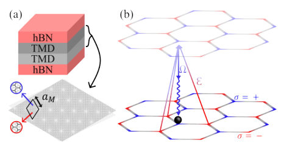
<figcaption class="paper-figure-caption"><b>Fig 1.</b> FIG. 1. Illustration of the driven-dissipative system. (a) Top: The moir´e heterostructure formed by a TMD homo- bilayer sandwiched by hBNs. Bottom: Moir´e pattern from TMDs, giving two high symmetry points (red and blue) re- lated to each other by a top-down inversion, which offers pseu- dospin degrees of freedom (σ = ±). (b) Engineered dissipa- tion for the preparation of superconductivity. A Raman tran- sition constituted by two external drives E and Ω(straight ar- rows) is implemented to access the emission of bosonic modes in hBN (curly arrow). These processes, with the auxiliary lattice (top hexagons) off-resonantly involved, together lead to movement of a fermion (black dot) in the...</figcaption>
</figure>
<figure class="paper-figure-card">
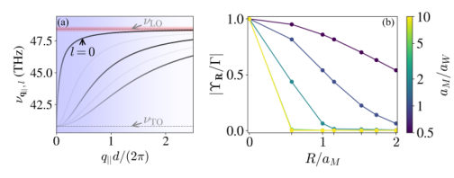
<figcaption class="paper-figure-caption"><b>Fig 2.</b> FIG. 2. Properties of HPPs in hBN. (a) Dispersion in HPPs. Opacity indicates the associated in-plane electric field strength |E|| n|, which is involved in the coupling to fermions. l = 0 labels the topmost mode arising from out-of-plane con- finement (see Methods). The red shaded region marks the tar- get linewidth centered around the longitudinal optical phonon frequency νLO. The blue shading indicates the relative weight of momenta contributing to dissipation, set by the width of the fermionic Wannier orbital. (b) Dissipation matrix ΥR mediated by HPPs at various distances R and moir´e peri- ods aM. In this panel, we set the fermionic Wannier orbital aW = 2 nm [21], Raman detuning ν =...</figcaption>
</figure>
<figure class="paper-figure-card">
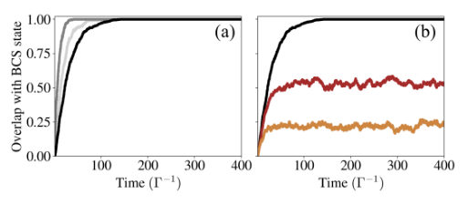
<figcaption class="paper-figure-caption"><b>Fig 3.</b> FIG. 3. Emergence of superconductivity upon time evolution. The overlap of the time-evolved density matrix with the BCS state |BCS, N⟩is computed under various cir- cumstances. To this end we numerically solve Eq. (1) using the quantum-trajectory method with a total of 500 trajecto- ries. (a) Different fermion fillings. Light gray, gray, and black points correspond to systems with 2, 4, and 6 fermions, re- spectively, on a 12-site hexagonal lattice with periodic bound- ary conditions. Initial states are chosen such that all fermions occupy a single sublattice. (b) Different degrees of imperfec- tion p, involved in the jump as ˆTr,σ →ˆTr,σ+p ˆf † r,σ ˆfr,σ. Black, brown, and light brown...</figcaption>
</figure>
<figure class="paper-figure-card">
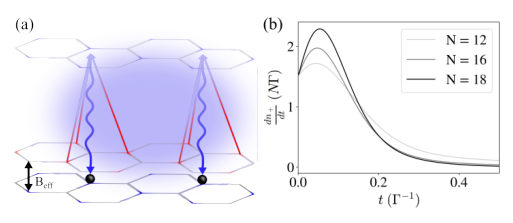
<figcaption class="paper-figure-caption"><b>Fig 4.</b> FIG. 4. Illustration of collective dissipation and its consequence. (a) In contrast to Fig. 1(b), here the dissipa- tors are nonlocal, thereby interfering with each other (indi- cated by blurred region), and acting collectively. Upon lifting the degeneracy in layer pseudospin with an effective Zeeman field Beff, the collective dissipation leads to a superradiant burst in the pseudospin transition rate dn+</figcaption>
</figure>
</div>

<p><strong>Summary.</strong> The paper introduces a method to engineer superconductivity in moiré heterostructures purely through controlled dissipation, bypassing the need for attractive interactions. By modeling the system dynamics using Lindblad master equations derived from coupling to bosonic modes, they show that local dissipation naturally drives the system into a BCS superconducting steady state. This establishes a powerful theoretical framework connecting non-equilibrium physics with fundamental quantum phenomena.</p>
<p><strong>Why it may be interesting.</strong> This work is highly relevant as it merges concepts from open quantum systems (dissipation engineering) with condensed matter physics (superconductivity), providing a concrete platform for studying non-equilibrium quantum phases.</p>
<details>
<summary>Detailed structure</summary>
<p><strong>Main problem.</strong> The authors propose a novel mechanism to achieve superconductivity (SC) as a stationary state without relying on enhancing attractive interactions.</p>
<p><strong>Main result.</strong> They demonstrate that engineered local dissipation in moiré heterostructures can drive the system into a BCS superconducting state, establishing this platform as promising for SC preparation.</p>
<p><strong>Method.</strong> The analysis uses Lindblad master equations derived through systematic approximations like adiabatic elimination and Born-Markov assumptions to model open quantum systems dynamics.</p>
<p><strong>Model / system.</strong> The physical system is a two-dimensional moiré heterostructure, specifically utilizing a bilayer platform where layer pseudospins control pairing. The dynamics are governed by a Lindblad master equation incorporating coupling to bosonic modes (HPPs).</p>
<p><strong>Key observables.</strong> Superconducting gap/BCS state formation, transient superradiant bursts, and coherence/incoherence couplings J(R) and $\Upsilon$(R).</p>
<p><strong>Important parameters / regimes.</strong> The ratio of electronic orbital width to moiré lattice constant ($a_W/a_M$), and the relative strengths of driving fields vs. dissipation rates.</p>
<p><strong>Assumptions / limitations.</strong> Key approximations include adiabatic elimination of auxiliary lattices/conduction electrons, Born-Markov approximation for bath integration, and assuming specific small parameter hierarchies for validity.</p>
<p><strong>Figures summary.</strong> Figures illustrate the moiré heterostructure setup, the engineered dissipation process involving Raman transitions, and numerical confirmations of local dissipation conditions ($\Upsilon(\mathbf{R}) \sim \delta_{\mathbf{R},0}$).</p>
<p><strong>Paper structure.</strong> The paper builds from defining the general driven-dissipative framework using Lindblad equations to deriving effective Hamiltonians via polaron transformations and adiabatic elimination, culminating in the final master equation describing SC formation and superradiance.</p>
</details>
<details>
<summary>Abstract</summary>
<p>Dissipative preparation of quantum order offers a route to superconductivity that does not rely on enhancing attractive interactions. Here we propose a driven-dissipative protocol to prepare superconductivity as a stationary state of a two-dimensional moiré heterostructure. The key ingredient is a bilayer moiré platform in which the layer degree of freedom acts as a pseudospin, allowing the pseudospin structure required for pairing to be implemented through optically induced spatial operations. This preparation scheme requires local dissipation, which we show to arises naturally from weakly dispersive bosonic modes in the heterostructure. In contrast, in the opposite regime of collective dissipation, the same platform exhibits an early-time superradiant burst. Our results establish driven-dissipative moiré heterostructures as a promising platform for preparing superconductivity, while also revealing a connection between steady-state pairing and transient superradiance.</p>
</details>
<p><sub><a href="#top">↑ back to top</a></sub></p>

<p><a id="paper-2607.14220"></a></p>
<h3 id="non-perturbative-saturation-of-krylov-complexity-and-its-implications-in-quantum-gravity">⭐ <a href="http://arxiv.org/abs/2607.14220v1">Non-perturbative saturation of Krylov complexity, and its implications in quantum gravity</a></h3>
<p><strong>Highlighted author(s):</strong> Andrew Lucas<br>
<strong>Authors:</strong> Andrew Lucas, Amit Vikram<br>
<strong>Type:</strong> theory · <strong>Category:</strong> other · <strong>PDF:</strong> <a href="https://arxiv.org/pdf/2607.14220v1">https://arxiv.org/pdf/2607.14220v1</a><br>
<strong>Analysis basis:</strong> full PDF text, analyzed in chunks
<strong>Topic relevance:</strong> 🔥 <code>entanglement &amp; information structure</code> <strong>4/5</strong> · <code>scars &amp; prethermalization</code> <strong>3/5</strong> · <code>non-equilibrium dynamics</code> <strong>2/5</strong> · <code>non-equilibrium universality</code> <strong>2/5</strong> · <code>Keldysh / 2PI / non-Gaussian methods</code> <strong>1/5</strong> · <code>correlated / nonlocal dissipation</code> <strong>1/5</strong> · <code>driven-dissipative phase transition</code> <strong>1/5</strong> · <code>methods for driven-dissipative</code> <strong>1/5</strong></p>
<div class="figure-strip-hint">↔ Scroll figures horizontally</div>
<div class="paper-figures-scroll">
<figure class="paper-figure-card">
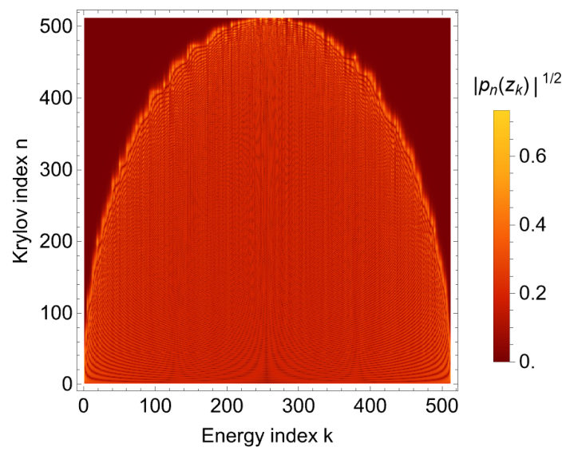
<figcaption class="paper-figure-caption"><b>Fig 1.</b> Figure 1: Demonstration of the “withdrawal” of the Krylov basis polynomials pn(zk) from the edges for a CUE random matrix with d = 512 eigenphases (energy levels) rescaled to [−1, 1].</figcaption>
</figure>
</div>

<p><strong>Summary.</strong> This paper analyzes the saturation of Krylov state complexity within finite-dimensional quantum systems, using models related to 2D quantum gravity. It proves that this complexity measure saturates at a predictable scale near the Heisenberg time, providing strong evidence for a nonperturbative relationship between spectral complexity and geometric quantities like wormhole length.</p>
<p><strong>Why it may be interesting.</strong> The connection drawn between a purely spectral/complexity measure (Krylov complexity) and fundamental geometric concepts like wormhole length or volume in quantum gravity is highly relevant to theoretical physics exploring holographic dualities.</p>
<details>
<summary>Detailed structure</summary>
<p><strong>Main problem.</strong> The study investigates the saturation behavior of Krylov state complexity, linking this mathematical property to fundamental conjectures in quantum gravity regarding volume/complexity relations.</p>
<p><strong>Main result.</strong> The paper proves that Krylov complexity saturates at time scales slightly larger than the Heisenberg time for low-energy states, suggesting a nonperturbative link between complexity and ergodicity in 2D quantum gravity models.</p>
<p><strong>Method.</strong> The analysis combines mathematical techniques involving orthogonal polynomials on discrete spectra with physical modeling derived from semiclassical limits of quantum gravity Hamiltonians (like JT gravity).</p>
<p><strong>Model / system.</strong> The primary model is the Double-scaled Sachdev-Ye-Kitaev (DSSYK) model, used as a microscopic proxy for 2D quantum gravity. The analysis focuses on the spectral properties and basis construction derived from its Hamiltonian.</p>
<p><strong>Key observables.</strong> Krylov state complexity $\langle X 
angle$, saturation length $x_{K,	ext{sat}}(E)$, and spectral rigidity measures ($
u_{k,   ext{edge}}$).</p>
<p><strong>Important parameters / regimes.</strong> Heisenberg time scale ($e^{S(E)}$), low-energy states, and the parameter $\lambda$ governing the JT gravity limit.</p>
<p><strong>Assumptions / limitations.</strong> The analysis relies on rigorous results concerning orthogonal polynomials built on discrete spectra and assumes specific scaling behaviors in the continuum limit for spectral rigidity calculations.</p>
<p><strong>Figures summary.</strong> Figure 1 illustrates the 'withdrawal' or crowding of Krylov basis polynomials from the edges of the spectrum, particularly relevant for CUE random matrix ensembles.</p>
<p><strong>Paper structure.</strong> The paper progresses by first establishing general mathematical theorems regarding polynomial completeness on discrete spectra (Theorem 1), then applying these tools to model quantum gravity systems like JT gravity via DSSYK, and finally deriving specific bounds for the saturation length $x_{K,	ext{sat}}(E)$.</p>
</details>
<details>
<summary>Abstract</summary>
<p>We study the dynamics of Krylov state complexity in finite-dimensional quantum systems. Orthogonal polynomials built on a discrete energy spectrum crowd away from regions where the density of states is low at large Krylov index. The physical implication of this result is that, even using a minimalist Krylov state complexity which is defined over the entire spectrum, the Krylov complexity provably stops growing a little past the Heisenberg length in every low-energy state. This has interesting implications for the proposal that Krylov complexity is related to the wormhole length in 2D quantum gravity.</p>
</details>
<p><sub><a href="#top">↑ back to top</a></sub></p>

<p><a id="paper-2607.14766"></a></p>
<h3 id="emergence-of-a-monopole-phase-in-the-math13math-heisenberg-model-on-the-triangular-lattice-for-small-magnetic-fields">⭐ <a href="http://arxiv.org/abs/2607.14766v1">Emergence of a monopole phase in the $J_1{-}J_2$ Heisenberg model on the triangular lattice for small magnetic fields</a></h3>
<p><strong>Highlighted author(s):</strong> Johannes Knolle<br>
<strong>Authors:</strong> Sasank Budaraju, Shi Feng, Josef Willsher, Johannes Knolle, Frank Pollmann, Federico Becca<br>
<strong>Type:</strong> theory · <strong>Category:</strong> strongly correlated electrons · <strong>PDF:</strong> <a href="https://arxiv.org/pdf/2607.14766v1">https://arxiv.org/pdf/2607.14766v1</a><br>
<strong>Analysis basis:</strong> full PDF text, analyzed in chunks
<strong>Topic relevance:</strong> 🔥 <code>analog quantum simulation</code> <strong>4/5</strong> · <code>exotic spin models in light-matter</code> <strong>3/5</strong> · <code>Keldysh / 2PI / non-Gaussian methods</code> <strong>1/5</strong> · <code>entanglement &amp; information structure</code> <strong>1/5</strong></p>
<div class="figure-strip-hint">↔ Scroll figures horizontally</div>
<div class="paper-figures-scroll">
<figure class="paper-figure-card">
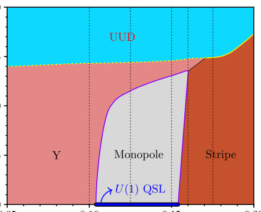
<figcaption class="paper-figure-caption"><b>Fig 1.</b> FIG. 1. Phase diagram of the model (1) in the parameter range H/J1 ∈[0, 2] and J2/J1 ∈[0, 0.2], as estimated from VMC calcu- lations on the 18×18 triangular lattice. Vertical dashed lines indicate the values of J2/J1 for which VMC scans were performed (includ- ing the case with J2 = 0). At the phase boundaries, dashed (solid) lines denote continuous (first order) phase transitions. This figure is adapted from Ref. [29].</figcaption>
</figure>
<figure class="paper-figure-card">
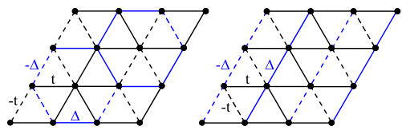
<figcaption class="paper-figure-caption"><b>Fig 2.</b> FIG. 2. Illustration of hopping parameters tij for the Y (a) and canted stripe (b) ans¨atze. Solid (dashed) lines denote positive (neg- ative) hopping amplitudes, and bonds in blue (black) denote ampli- tudes |tij| = ∆(|tij| = t). The flux through each triangular plaque- tte is 0 or π, following the Dirac spin liquid ansatz [6].</figcaption>
</figure>
<figure class="paper-figure-card">
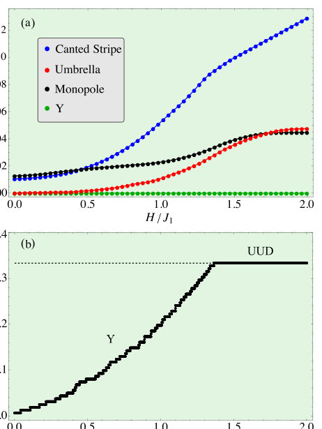
<figcaption class="paper-figure-caption"><b>Fig 3.</b> FIG. 3. (a) Energies (per site) of all the variational ans¨atze relative to that of the Y phase, on the 18 × 18 system. Errorbars are smaller than the size of the symbols. (b) Magnetization curve at J2 = 0, on the same cluster. A continuous transition from the Y phase to the UUD plateau is observed.</figcaption>
</figure>
<figure class="paper-figure-card">
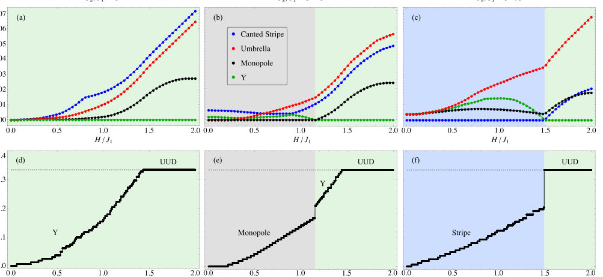
<figcaption class="paper-figure-caption"><b>Fig 4.</b> FIG. 4. Top panels (a) - (c): Comparison of the energies ∆E(H) per site for the different ans¨atze relative to the state with the lowest energy at a given H, for J2/J1 = 0.1, J2/J1 = 0.125, and J2/J1 = 0.175. Errorbars are smaller than the size of the symbols. Bottom panels (d) - (f): Magnetization curves for the three values of J2/J1. All calculations are performed on a 18 × 18 lattice.</figcaption>
</figure>
<figure class="paper-figure-card">
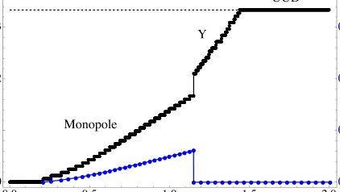
<figcaption class="paper-figure-caption"><b>Fig 5.</b> FIG. 5. Magnetization and scalar chirality at J2/J1 = 1/8 as a function of the magnetic field H/J1 on the 18 × 18 cluster. The chi- rality monotonously increases for the monopole phase, and is identi- cally zero for the Y and UUD phases.</figcaption>
</figure>
</div>

<p><strong>Summary.</strong> This work maps out the complex ground-state phase diagram of the $J_1{-}J_2$ Heisenberg model on a triangular lattice under an external magnetic field. Using Variational Monte Carlo, the authors identify a novel monopole phase stabilized near specific ratios of exchange couplings ($J_2/J_1=1/8$). This suggests that quantum fluctuations can stabilize topologically rich phases characterized by gauge excitations even when simple magnetic order is absent.</p>
<p><strong>Why it may be interesting.</strong> The emergence of topologically non-trivial phases, such as monopole condensates, in frustrated quantum magnets is highly relevant for understanding exotic states beyond simple magnetic ordering, connecting strongly correlated physics to gauge theory concepts.</p>
<details>
<summary>Detailed structure</summary>
<p><strong>Main problem.</strong> The study investigates the ground-state phase diagram of the $J_1{-}J_2$ Heisenberg model on the triangular lattice when subjected to a small external Zeeman field ($H$).</p>
<p><strong>Main result.</strong> The research finds that around $J_2/J_1=1/8$, a stable condensate of monopoles emerges in the phase diagram for small magnetic fields, characterized by finite scalar chirality but no transverse magnetic order.</p>
<p><strong>Method.</strong> Variational Monte Carlo (VMC) is employed to calculate variational energies across different candidate phases. This is supplemented by field-theory approaches and spin-wave theory analysis.</p>
<p><strong>Model / system.</strong> The system is the $J_1{-}J_2$ Heisenberg model on a triangular lattice, described by the Hamiltonian $H = J_1 \sum_{\langle i,j
angle} \mathbf{S}_i \cdot \mathbf{S}_j + J_2 \sum_{\langle\langle i,k
angle
angle} \mathbf{S}_i \cdot \mathbf{S}_k - H \sum_i S_{z,i}$.</p>
<p><strong>Key observables.</strong> Phase diagram dependence on $J_2/J_1$ and $H/J_1$; scalar chirality ($\chi$); magnetization curves; transverse structure factor.</p>
<p><strong>Important parameters / regimes.</strong> $J_2/J_1 \le 0.2$ and $H/J_1 \le 2$. The critical point of interest is near $J_2/J_1=1/8$.</p>
<p><strong>Assumptions / limitations.</strong> The phase diagram construction relies on finite cluster calculations, which may underestimate the spin-liquid region at zero field compared to previous work.</p>
<p><strong>Figures summary.</strong> Figures illustrate the model's behavior in the parameter space, showing transitions between phases like 'Y', 'up-up-down', and the monopole phase. Specific plots show structure factors for different states vs. magnetization.</p>
<p><strong>Paper structure.</strong> The paper systematically explores the ground state by comparing variational ansätze (e.g., Y, umbrella, monopole) using VMC to map out the phase diagram as a function of $J_2/J_1$ and $H/J_1$. Field-theory methods are used to confirm the stability of the emergent monopole phase.</p>
</details>
<details>
<summary>Abstract</summary>
<p>We investigate the ground-state phase diagram of the $J_1{-}J_2$ Heisenberg model on the triangular lattice under an external Zeeman field $H$ by using the variational Monte Carlo approach. We span a region with $0 \le J_2/J_1 \le 0.2$ and $0 \le H/J_1 \le 2$, to assess the fate of the (putative) spin-liquid phase that has been detected for $J_2/J_1=1/8$ at zero magnetic field. Simple variational ansatze are proposed for a few candidate states, and their energetics are compared on large clusters to obtain the phase diagram. For $J_2/J_1 \lesssim 1/6$, a continuous transition from a gapless "Y'' phase to a gapped "up-up-down'' phase is obtained, as predicted by spin-wave theory. Most importantly, around $J_2/J_1=1/8$, a condensate of monopoles (which are gapless gauge excitations of the spin liquid at $H=0$) is stabilized in a significant region of the phase diagram, for small Zeeman fields. Here, a finite scalar chirality is present, while no transverse magnetic order is detected. The stability of the monopole phase is confirmed by a field-theory approach that includes a self-consistent random-phase approximation of the low-lying spin fluctuations. The boundary between the monopole and "Y'' phases is also obtained with no free parameters.</p>
</details>
<p><sub><a href="#top">↑ back to top</a></sub></p>

<p><a id="paper-2607.14239"></a></p>
<h3 id="fock-state-preparation-based-on-amplitude-amplification-in-cavity-qed">⭐ <a href="http://arxiv.org/abs/2607.14239v1">Fock-state preparation based on amplitude amplification in cavity QED</a></h3>
<p><strong>Highlighted author(s):</strong> Alexey V. Gorshkov<br>
<strong>Authors:</strong> Sharoon Austin, Zhi-Yuan Wei, Kartik Srinivasan, Alexey V. Gorshkov<br>
<strong>Type:</strong> theory · <strong>Category:</strong> other · <strong>PDF:</strong> <a href="https://arxiv.org/pdf/2607.14239v1">https://arxiv.org/pdf/2607.14239v1</a><br>
<strong>Analysis basis:</strong> full PDF text, analyzed in chunks
<strong>Topic relevance:</strong> <code>analog quantum simulation</code> <strong>3/5</strong> · <code>correlated cavity matter</code> <strong>3/5</strong> · <code>QC/QI experiment</code> <strong>2/5</strong> · <code>Tavis-Cummings &amp; cavity-many-emitter</code> <strong>2/5</strong> · <code>quantum optics experiment</code> <strong>2/5</strong> · <code>correlated / nonlocal dissipation</code> <strong>1/5</strong> · <code>driven-dissipative phase transition</code> <strong>1/5</strong> · <code>entanglement &amp; information structure</code> <strong>1/5</strong> · <code>methods for driven-dissipative</code> <strong>1/5</strong> · <code>non-equilibrium dynamics</code> <strong>1/5</strong></p>
<div class="figure-strip-hint">↔ Scroll figures horizontally</div>
<div class="paper-figures-scroll">
<figure class="paper-figure-card">
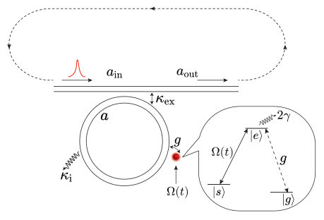
<figcaption class="paper-figure-caption"><b>Fig 1.</b> FIG. 1. The atom is coupled to the cavity mode a, the cavity mode is coupled to the waveguide with coupling κex, and the cavity has an intrinsic loss rate κi. As shown on the right, the atomic levels |s⟩and |e⟩are coupled resonantly by a classical laser pulse (shown by a solid-black line) with Rabi frequency Ω(t), while the atomic levels |e⟩and |g⟩are coupled resonantly by the cavity with single- photon Rabi frequency g (shown by a dashed-black line). The state |e⟩decays with rate 2γ. Each step of the amplification protocol is implemented by sending the single-photon output back to the cav- ity while applying different versions of the control pulse Ω(t) from Eq. (28).</figcaption>
</figure>
<figure class="paper-figure-card">
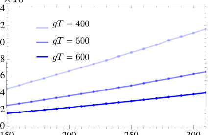
<figcaption class="paper-figure-caption"><b>Fig 2.</b> FIG. 2. In (a), for our protocol, we show kmin, the value of k that min- imizes the inefficiency 1−η2, where η2 = maxτ| R ∞ −∞aout(t)h∗(t+ τ)dt|2, versus κexT for various values of g in the lossless case (κi = γ = 0). Here, the T operations are omitted. The value of T is kept fixed. Here, η2 is obtained from numerical solutions of Eqs. (20)– (22) with the single-photon mode h(t) = p</figcaption>
</figure>
<figure class="paper-figure-card">
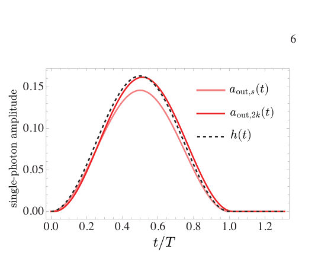
<figcaption class="paper-figure-caption"><b>Fig 3.</b> FIG. 4. The single-photon output aout,2k(t), obtained from numer- ical solutions of Eqs. (20)–(22) for k = 18, is shown. Here, the T operations are omitted, the single-photon mode is h(t) = p</figcaption>
</figure>
<figure class="paper-figure-card">
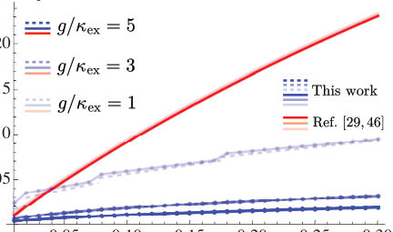
<figcaption class="paper-figure-caption"><b>Fig 4.</b> FIG. 3. The inefficiency 1 −η2 and single-photon loss 1 −η3 for our protocol are plotted for various values of κi/κex, with κex fixed and γ = 0.003κex. Here, the T operations are omitted, η2 = maxτ| R ∞ −∞aout(t)h∗(t + τ)dt|2, and η3 = R ∞ −∞|aout(t)|2dt. The dashed-blue lines show the minimum single-photon loss in our protocol from Eq. (31), while the solid-red lines, which overlap, cor- respond to the maximum achievable values of both η2 and η3 ob- tained using the single-strong-pulse protocol [29, 46] in the limit κexT ≫1. The inefficiency for our protocol, shown by the solid- blue lines, is computed by numerically solving Eqs. (20)–(22) with the single-photon mode h(t) = p</figcaption>
</figure>
<figure class="paper-figure-card">
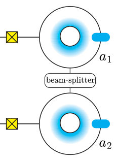
<figcaption class="paper-figure-caption"><b>Fig 5.</b> FIG. 7. We present a schematic diagram of two transmon–cavity systems with modes a1 and a2 used for NOON state preparation. A beam-splitter interaction is used to implement UBS on the cavity modes from Eq. (43).</figcaption>
</figure>
</div>

<p><strong>Summary.</strong> The paper presents advanced coherent control techniques using amplitude amplification to enhance single-photon sources and prepare multi-photon Fock states in both optical and microwave cavity QED systems. Key achievements include improving the scaling of photon generation protocols and achieving state preparation with $O(n^{1/4})$ length scaling. This work is highly relevant for experimental quantum optics aiming for scalable quantum information processing.</p>
<p><strong>Why it may be interesting.</strong> This work provides concrete, scalable protocols for generating fundamental quantum resources (single photons, high-number Fock states) essential for quantum networking and computation, directly addressing practical limitations like loss and scaling in cavity QED.</p>
<details>
<summary>Detailed structure</summary>
<p><strong>Main problem.</strong> The work develops coherent control techniques based on amplitude amplification to achieve high-efficiency single-photon sources and prepare arbitrary Fock states in cavity QED.</p>
<p><strong>Main result.</strong> A protocol for single-photon generation improves scaling from $N \sim 1/p$ to $N \sim 1/\sqrt{p}$, while Fock state preparation scales as $O(n^{1/4})$.</p>
<p><strong>Method.</strong> The core method involves extending oblivious amplitude amplification and utilizing fixed-point amplitude amplification within the framework of cavity QED dynamics.</p>
<p><strong>Model / system.</strong> Two platforms are studied: a three-level quantum emitter coupled to an optical cavity for photon sources, and a superconducting qubit coupled to a microwave cavity in circuit QED for Fock state preparation. The dynamics are governed by coupled differential equations describing the interaction Hamiltonian.</p>
<p><strong>Key observables.</strong> Single-photon retrieval efficiency ($\eta_2$), single-photon loss ($1-\eta_3$), and fidelity of prepared states (e.g., NOON states).</p>
<p><strong>Important parameters / regimes.</strong> Success probability $p$, number of photons $n$, coupling strength $g$, cavity decay rate $\kappa$, and intrinsic loss rates ($\kappa_i, \gamma$).</p>
<p><strong>Assumptions / limitations.</strong> The analysis often relies on the weak control pulse limit or the adiabatic approximation for long Grover sequences to simplify error analysis.</p>
<p><strong>Figures summary.</strong> Figures illustrate system setups (atom/cavity coupling) and plot performance metrics like inefficiency ($1-\eta_2$) versus sequence length parameter $k$ in both lossless and lossy regimes.</p>
<p><strong>Paper structure.</strong> The paper systematically develops the theory by first introducing the general amplitude amplification framework, then applying it to single-photon generation (addressing scaling improvements and losses), followed by its application to Fock state preparation using fixed-point methods, and concluding with detailed error analysis for both scenarios.</p>
</details>
<details>
<summary>Abstract</summary>
<p>In this work, we develop a coherent control technique for cavity QED based on amplitude amplification. We consider two physical platforms. In the first setting, we study a three-level quantum emitter coupled to a single mode of an optical cavity and introduce a protocol for producing traveling single photons based on oblivious amplitude amplification. As the key ingredient of our protocol, we propose an extension of oblivious amplitude amplification which uses reflection unitaries solely on the signal qubit, along with $U$ and $U^\dagger$, where the unitary $U$ prepares the initial state. Our approach improves the scaling of the single-photon-generation protocol length from $N\sim 1/p$ to $N\sim 1/\sqrt{p}$, with $p$ denoting the success probability of obtaining a short single photon from a single application of the weak control pulse. Furthermore, our protocol also reduces the error from intrinsic cavity loss compared to protocols using a single strong control pulse in various experimentally relevant regimes, suggesting the application of our methods for error reduction. In the second setting, we consider a superconducting qubit coupled to a single bosonic mode of a microwave cavity in a circuit QED architecture in the dispersive regime for preparing Fock states. Using fixed-point amplitude amplification, we obtain a protocol for preparing Fock states whose length scales as $O(n^{1/4})$, where $n$ is the number of photons. Additionally, as an application of our methods for state preparation, we describe a protocol for preparing NOON states.</p>
</details>
<p><sub><a href="#top">↑ back to top</a></sub></p>

<p><a id="paper-2607.14223"></a></p>
<h3 id="quantum-many-body-mixed-phase-space-revealed-by-hybrid-feedback-control"><a href="http://arxiv.org/abs/2607.14223v1">Quantum many-body mixed phase space revealed by hybrid feedback control</a></h3>
<p><strong>Authors:</strong> Hang Dong, Jie Ren, Andrew Hallam, Han Wang, Zhengyi Cui, Yiren Zou, Junlin Wang, Hekang Li, Qiujiang Guo, Zhen Wang, Lei Ying, Zlatko Papic<br>
<strong>Type:</strong> both · <strong>Category:</strong> statistical mechanics · <strong>PDF:</strong> <a href="https://arxiv.org/pdf/2607.14223v1">https://arxiv.org/pdf/2607.14223v1</a><br>
<strong>Analysis basis:</strong> full PDF text, analyzed in chunks
<strong>Topic relevance:</strong> 🔥 <code>quantum measurements</code> <strong>5/5</strong> · 🔥 <code>analog quantum simulation</code> <strong>4/5</strong> · 🔥 <code>measurement-induced transitions</code> <strong>4/5</strong> · <code>driven-dissipative phase transition</code> <strong>3/5</strong> · <code>entanglement &amp; information structure</code> <strong>3/5</strong> · <code>methods for driven-dissipative</code> <strong>3/5</strong> · <code>non-equilibrium dynamics</code> <strong>3/5</strong> · <code>Keldysh / 2PI / non-Gaussian methods</code> <strong>2/5</strong> · <code>correlated / nonlocal dissipation</code> <strong>2/5</strong> · <code>non-equilibrium universality</code> <strong>2/5</strong> · <code>QC/QI experiment</code> <strong>1/5</strong> · <code>exotic spin models in light-matter</code> <strong>1/5</strong> · <code>scars &amp; prethermalization</code> <strong>1/5</strong> · <code>spintronics-quantum-optics interface</code> <strong>1/5</strong></p>
<div class="figure-strip-hint">↔ Scroll figures horizontally</div>
<div class="paper-figures-scroll">
<figure class="paper-figure-card">
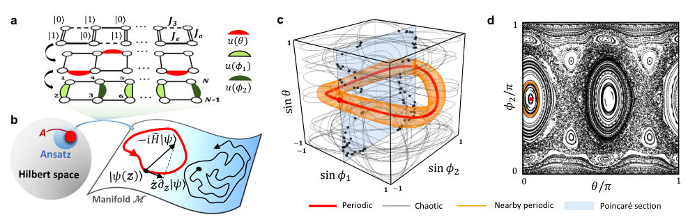
<figcaption class="paper-figure-caption"><b>Fig 1.</b> Figure 1. Superconducting circuit with a mixed phase space. a The shallow variational circuit used to approximate the real-time dynamics of an interacting SSH ladder, Eq. (1), on our superconducting qubit processor. The inter-leg coupling Jo is uniform, while the intra-leg couplings alternate between Je and J3, defining an SSH-type dimerization pattern. The calibrated device couplings are Je/2π = 3.0 MHz, J3/2π = 0.25 MHz, and Jo/2π = 5.0 MHz. Starting from the N´eel-ordered product state, two layers of entangling XY gates are applied: first ˆu(θ) on even bonds, followed by alternating ˆu(ϕ1) and ˆu(ϕ2) on odd bonds (see text). b The circuit ansatz from panel a [Eq. (2)] defines a...</figcaption>
</figure>
<figure class="paper-figure-card">
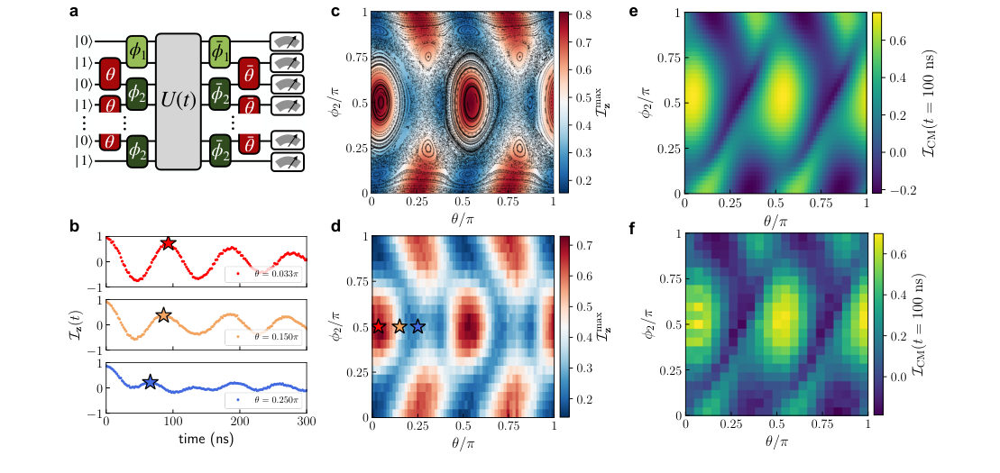
<figcaption class="paper-figure-caption"><b>Fig 2.</b> Figure 2. Experimental mapping of the Poincar´e section. a Quantum circuit implementing the measurement of imbalance Iz(t) in Eq. (3). The system is initialized in a product state parameterized by (θ, ϕ1, ϕ2) by acting with a unitary ˆUM in Eq. (2), then evolved by the unitary ˆU(t) generated by the Hamiltonian in Eq. (1), and finally acted upon by the inverse circuit ˆU † M before readout. b Imbalance dynamics Iz(t) for three representative initial states with fixed ϕ2 = 0.5π and θ/π = 0.033, 0.150, and 0.250 (red, orange, and blue, respectively). The star on each curve indicates the time at which the first revival peak is identified; this defines the quantity Imax z whose values are shown...</figcaption>
</figure>
<figure class="paper-figure-card">
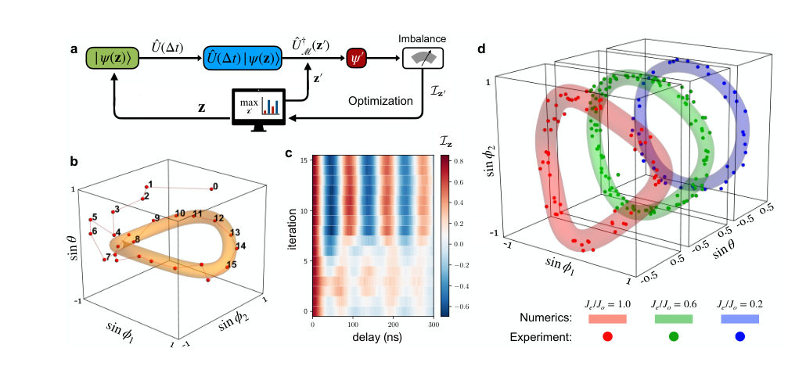
<figcaption class="paper-figure-caption"><b>Fig 3.</b> Figure 3. Hybrid feedback control of variational dynamics. a Schematic workflow of the iterative feedback loop in Eq. (4). Starting from an initial state |ψ(z)⟩with parameters (θ, ϕ1, ϕ2), the system evolves under the unitary ˆU(∆t) generated by the Hamiltonian in Eq. (1). An inverse variational circuit ˆU † M(z′) is then applied, and the measured imbalance Iz′ is maximized through classical optimization, providing updated parameters z′ for the next iteration. b Feedback evolution for a single experimental trajectory on the superconducting processor using 24 qubits, using a time interval ∆t = 80 ns for each feedback step. Starting from z(0) = (π/4, 0, π/2), the markers indicate the first...</figcaption>
</figure>
<figure class="paper-figure-card">
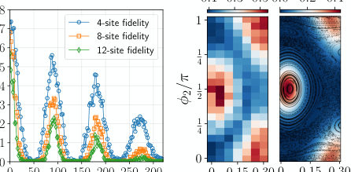
<figcaption class="paper-figure-caption"><b>Fig 4.</b> Figure 4. Subsystem fidelity. a Subsystem fidelity Fsub(t) for three choices of subsystem size Lsub = 4, 8, 12 and fixed initial condition (θ, ϕ2) = (0.05π, 0.5π). In all the measurements, the subsystem is taken as the central block of Lsub qubits. b Poincar´e-section–like maps constructed from the first fidelity revival. The left panel shows the 4-qubit subsystem fidelity F max sub (θ, ϕ2) obtained experimentally. The right panel shows the corresponding global fidelity F max(θ, ϕ2) obtained from exact diagonalization of an L = 16 spin chain with periodic boundary conditions, overlaid with the TDVP Poincar´e section (black dots). Despite the larger fluctuations in the fidelity-based maps,...</figcaption>
</figure>
</div>

<p><strong>Summary.</strong> The research addresses the challenge of observing mixed phase space dynamics in interacting quantum systems by developing and implementing a hybrid quantum-classical feedback control protocol. This method stabilizes coherent, regular quantum trajectories on superconducting qubits, revealing an emergent quantum many-body mixed phase space structure. It establishes a powerful framework for experimentally controlling and characterizing complex non-equilibrium quantum dynamics.</p>
<p><strong>Why it may be interesting.</strong> This work bridges quantum simulation techniques (TDVP/variational methods) with fundamental concepts from classical dynamical systems theory (KAM tori, Poincaré sections), providing a concrete pathway to experimentally probe non-equilibrium statistical physics in many-body quantum matter.</p>
<details>
<summary>Detailed structure</summary>
<p><strong>Main problem.</strong> The central challenge is understanding how complex interacting quantum many-body systems transition between ordered (regular) and chaotic dynamics, revealing a mixed phase space structure.</p>
<p><strong>Main result.</strong> The authors demonstrate that a hybrid quantum-classical feedback protocol can autonomously discover and stabilize long-lived regular trajectories, revealing an emergent quantum many-body mixed phase space distinct from classical analogs.</p>
<p><strong>Method.</strong> They employ a Time-Dependent Variational Principle (TDVP) framework combined with a novel hybrid feedback control loop to project the full quantum evolution onto a low-entanglement variational manifold.</p>
<p><strong>Model / system.</strong> The study uses an interacting spin-1/2 model inspired by the Su–Schrieffer–Heeger (SSH) ladder, implemented on a superconducting qubit processor. The dynamics are governed by a complex Hamiltonian involving various couplings ($J_t, J_b, J_{	ext{int}}$).</p>
<p><strong>Key observables.</strong> Poincaré sections derived from imbalance measurements ($I_z(t)$), entanglement entropy ($S_E$), and the co-moving imbalance ($  ext{ICM}$).</p>
<p><strong>Important parameters / regimes.</strong> The system is analyzed in regimes where couplings are small relative to inter-leg coupling ($J_e, J_3 \ll J_o$); the analysis also explores the thermodynamic limit ($N	o\infty$).</p>
<p><strong>Assumptions / limitations.</strong> The dynamics are approximated by restricting the state evolution to a low-dimensional variational manifold $M$, which is an approximation of the full quantum Hilbert space.</p>
<p><strong>Figures summary.</strong> Figures illustrate schematic circuit setups, 3D visualizations of the variational manifold showing regular vs. chaotic regions, and Poincaré sections derived from imbalance measurements that confirm the coexistence of stable islands and chaotic seas.</p>
<p><strong>Paper structure.</strong> The paper develops a hybrid feedback protocol to stabilize dynamics on the variational manifold, using TDVP to derive effective classical equations of motion. Key diagnostics like $I_z(t)$ are used to map out the mixed phase space structure, comparing theoretical predictions with experimental measurements on superconducting qubits.</p>
</details>
<details>
<summary>Abstract</summary>
<p>Understanding how complex systems transition between order and chaos is a central challenge of nonequilibrium physics. While weak perturbations of classical integrable systems give rise to a mixed phase space of coexisting regular and chaotic trajectories, analogous behavior in interacting quantum many-body systems has remained elusive. Here we develop and experimentally implement a hybrid quantum-classical feedback protocol that autonomously discovers and stabilizes long-lived regular trajectories in a superconducting quantum processor. Each iteration combines short-time quantum evolution with classical optimization that projects the dynamics back onto a low-entanglement variational manifold, effectively distilling coherence from chaotic evolution. The stabilized trajectories reveal a quantum many-body mixed phase space emerging from nonlinear variational dynamics, without a direct analogue in classical or few-body quantum systems. Our results establish a versatile framework for algorithmic discovery and control of coherent dynamics previously inaccessible to experiment.</p>
</details>
<p><sub><a href="#top">↑ back to top</a></sub></p>

<p><a id="paper-2607.14663"></a></p>
<h3 id="tuning-the-universality-class-of-a-quantum-process-by-trotterization"><a href="http://arxiv.org/abs/2607.14663v1">Tuning the universality class of a quantum process by Trotterization</a></h3>
<p><strong>Authors:</strong> Robin Prampain dit Boulan, Jerom Jebai, Hendrik Weimer<br>
<strong>Type:</strong> theory · <strong>Category:</strong> statistical mechanics · <strong>PDF:</strong> <a href="https://arxiv.org/pdf/2607.14663v1">https://arxiv.org/pdf/2607.14663v1</a><br>
<strong>Analysis basis:</strong> full PDF text, analyzed in chunks
<strong>Topic relevance:</strong> 🔥 <code>non-equilibrium universality</code> <strong>5/5</strong> · 🔥 <code>driven-dissipative phase transition</code> <strong>4/5</strong> · 🔥 <code>methods for driven-dissipative</code> <strong>4/5</strong> · <code>non-equilibrium dynamics</code> <strong>3/5</strong> · <code>Keldysh / 2PI / non-Gaussian methods</code> <strong>1/5</strong> · <code>analog quantum simulation</code> <strong>1/5</strong> · <code>correlated / nonlocal dissipation</code> <strong>1/5</strong></p>
<div class="figure-strip-hint">↔ Scroll figures horizontally</div>
<div class="paper-figures-scroll">
<figure class="paper-figure-card">
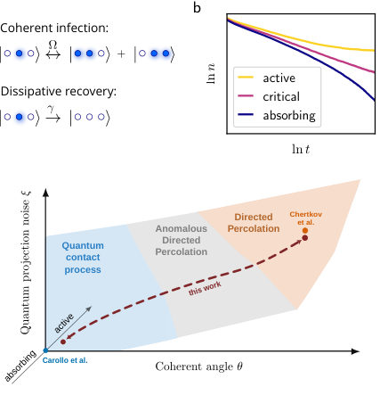
<figcaption class="paper-figure-caption"><b>Fig 1.</b> FIG. 1. Quantum contact process. (a) Basic processes con- sisting of coherent infection and dissipative recovery. (b) Characteristic behavior of the density of infected cells n(t) near the critical point. (c) Sketch of the different universality classes at the critical point of the Trotterized quantum contact process. Depending on the Trotter angle θ and the strength of the projection noise ξ, three different regions are found, cor- responding to directed percolation, a novel quantum contact process universality class connected to the continuous-time process, and an intermediate region exhibiting anomalous di- rected percolation. The path through this parameter space investigated here is...</figcaption>
</figure>
<figure class="paper-figure-card">
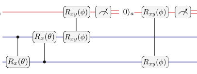
<figcaption class="paper-figure-caption"><b>Fig 2.</b> FIG. 2. Discrete dynamics of a single timestep for L = 2. System qubits si are coupled to an ancilla qubit a initialized in |0⟩. The coherent dynamics is performed via Controlled-Rx rotation gates on the system qubits with the coherent angle θ. The dissipative step is performed by coupling each system qubit to the corresponding ancilla using a parametric swap (Rxy) gate with the dissipative angle ϕ. Finally, the ancilla is reset to |0⟩, providing a dissipative element.</figcaption>
</figure>
<figure class="paper-figure-card">
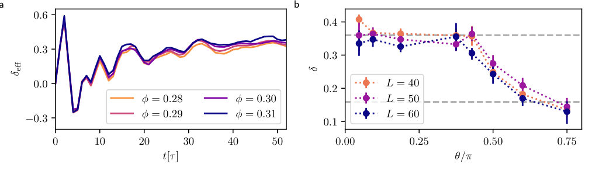
<figcaption class="paper-figure-caption"><b>Fig 3.</b> FIG. 3. Effective critical exponent of the Trotterized contact process. (a) In the long-time limit, δeff(t) approaches the QCP value of 0.36 for a small Trotter angle θ = 3π/32 (L = 60). (b) For larger values of θ, the critical exponent δ according to the long-time limit continuously drops from the QCP value towards the DP value of 0.159 (dashed lines). The behavior is consistent for different system sizes, ruling out strong finite-size effects. Error bars are standard errors from bootstrapping with 100 samples.</figcaption>
</figure>
<figure class="paper-figure-card">
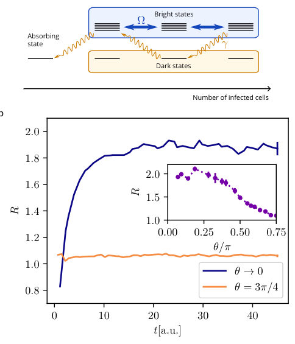
<figcaption class="paper-figure-caption"><b>Fig 4.</b> FIG. 4. Emergence of dark states. (a) Strong coherent in- fection coupling Ωonly couples the bright states. Weak dis- sipation γ can trap the system in a dark state, in which no infections are possible until the next dissipative event. (b) Ratio R(t) between dark and bright state pairs at critical- ity, showing a clear difference between the continuous-time case belonging to the QCP universality class and θ = 3π/4 belonging to the DP universality class. Error bars denote represenative Monte-Carlo sampling errors. The inset shows that the drop from R(t →∞) ≈2 occurs around the θ value where the universality class starts to deviate from QCP.</figcaption>
</figure>
</div>

<p><strong>Summary.</strong> The authors investigate the quantum contact process to resolve a conflict over its critical universality class. They demonstrate that the observed difference between theoretical and experimental predictions stems from the details of the Trotterization discretization used in simulations. By systematically tuning this discretization, they construct a continuous interpolation path connecting the two predicted classes.</p>
<p><strong>Why it may be interesting.</strong> This work is highly relevant as it tackles non-equilibrium phase transitions in quantum systems, providing quantitative evidence that the choice of numerical simulation method can fundamentally alter predicted universal physics.</p>
<details>
<summary>Detailed structure</summary>
<p><strong>Main problem.</strong> The paper resolves a controversy regarding the universality class of the quantum contact process (QCP) phase transition, which was debated between a novel quantum class and the classical directed percolation (DP) class.</p>
<p><strong>Main result.</strong> The discrepancy in critical exponents is shown to arise from the details of the Trotterization discretization; by systematically tuning the discretization parameters, a continuous path connecting the QCP and DP universality classes is established.</p>
<p><strong>Method.</strong> Numerical analysis using Matrix Product State (MPS) simulations on a 1D lattice to calculate the effective critical exponent ($\delta_{eff}$) across different parameter regimes.</p>
<p><strong>Model / system.</strong> The quantum contact process (QCP) on a 1D lattice, modeled by a Lindblad master equation involving coherent infection dynamics ($H$) and dissipative recovery processes. The dynamics are analyzed after discretization via the Suzuki-Trotter expansion.</p>
<p><strong>Key observables.</strong> Effective critical exponent ($\delta_{eff}$), which characterizes the long-time decay of average density $\langle n(t) 
angle$; a diagnostic ratio $R(t)$ comparing dark-to-bright state probabilities.</p>
<p><strong>Important parameters / regimes.</strong> The ratio governing dynamics ($\Omega/\gamma$), and the discretization angles ($ heta$ for coherent, $\phi$ for dissipative), which are tuned to interpolate between regimes.</p>
<p><strong>Assumptions / limitations.</strong> The primary approximation is the use of a first-order Suzuki-Trotter expansion to discretize the continuous-time quantum evolution.</p>
<p><strong>Figures summary.</strong> Implied figures show the effective critical exponent ($\delta_{eff}$) smoothly varying as a function of the dissipation angle $\phi$, demonstrating convergence from the QCP value towards the DP value. A ratio $R(t)$ is shown to distinguish between the two regimes.</p>
<p><strong>Paper structure.</strong> The paper first sets up the continuous-time model and then analyzes its discretized version using Trotterization. The core of the work involves systematically varying the discretization parameters ($\phi$) to map out a continuous interpolation path between known critical behaviors (QCP vs DP).</p>
</details>
<details>
<summary>Abstract</summary>
<p>We numerically analyze a discretized version of the quantum contact process, a non-equilibrium model having a competition between a coherent infection process and a dissipative recovery process. Previously, the continuous-time version has been discussed to have a phase transition in a novel quantum universality class, while experimental investigations of a related process have pointed towards the transition being in the classical directed percolation class. We demonstrate that these differences stem from details of the discretization of the process and construct a systematic way to continuously interpolate between these results. Finally, we provide evidence that the modification of the universality class is due to destructive interference effects, showing a clear quantum-mechanical origin.</p>
</details>
<p><sub><a href="#top">↑ back to top</a></sub></p>

<p><a id="paper-2607.14311"></a></p>
<h3 id="general-theory-of-monitored-quantum-reservoir-computing"><a href="http://arxiv.org/abs/2607.14311v1">General theory of monitored Quantum Reservoir Computing</a></h3>
<p><strong>Authors:</strong> Oriol Morguí-Sancho, Gian Luca Giorgi, Gonzalo Manzano, Roberta Zambrini<br>
<strong>Type:</strong> theory · <strong>Category:</strong> quantum information and computing · <strong>PDF:</strong> <a href="https://arxiv.org/pdf/2607.14311v1">https://arxiv.org/pdf/2607.14311v1</a><br>
<strong>Analysis basis:</strong> full PDF text, analyzed in chunks
<strong>Topic relevance:</strong> 🔥 <code>quantum measurements</code> <strong>5/5</strong> · 🔥 <code>measurement-induced transitions</code> <strong>4/5</strong> · <code>methods for driven-dissipative</code> <strong>3/5</strong> · <code>non-equilibrium dynamics</code> <strong>2/5</strong> · <code>Keldysh / 2PI / non-Gaussian methods</code> <strong>1/5</strong> · <code>correlated / nonlocal dissipation</code> <strong>1/5</strong> · <code>driven-dissipative phase transition</code> <strong>1/5</strong> · <code>entanglement &amp; information structure</code> <strong>1/5</strong></p>
<div class="figure-strip-hint">↔ Scroll figures horizontally</div>
<div class="paper-figures-scroll">
<figure class="paper-figure-card">
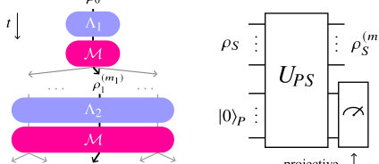
<figcaption class="paper-figure-caption"><b>Fig 1.</b> FIG. 1. (a) The monitored dynamics of a quantum system can be viewed as the interleaved effect of unmonitored dynamics Λ𝑘, which evolve the system in a deterministic way, and mea- surements M, which stochastically change the state of the sys- tem depending on the measurement outcome 𝑚. A single re- alization of the stochastic dynamics, with measurement history ®m𝑘= (𝑚𝑘, . . . , 𝑚1), is known as a quantum trajectory; (b) Ac- cording to Gelfand-Naimark’s theorem, the measurement map M can always be implemented as an indirect measurement by unitary coupling between the system of interest (𝑆) and a quantum probe (𝑃) followed by a projective measurement of the latter.</figcaption>
</figure>
<figure class="paper-figure-card">
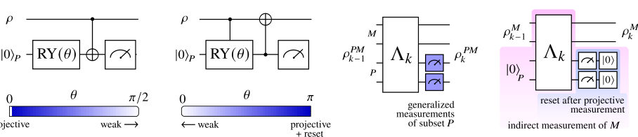
<figcaption class="paper-figure-caption"><b>Fig 2.</b> FIG. 2. Using the equivalence between open quantum dynamics and nonselective measurement maps, one can engineer indirect measurement schemes whose average back-action reproduces dissipative channels such as (a) dephasing and (b) amplitude damping. In both cases, a system qubit is coupled to a probe qubit through the unitary circuits shown, with a tunable parameter 𝜃controlling the measurement strength from weak to strong. For many-body systems, the measurement-induced disturbance on the natural dynamics Λ𝑘can also be reduced by measuring only a subset of qubits 𝑃, which is equivalent to indirectly measuring the complementary subset 𝑀(c,d). Sequential measurements (monitoring) without...</figcaption>
</figure>
<figure class="paper-figure-card">
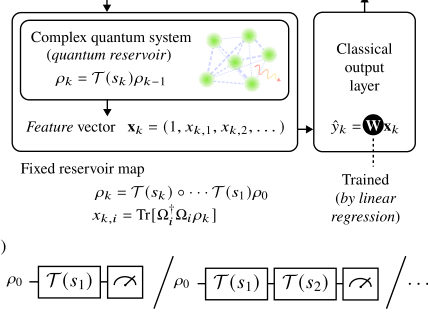
<figcaption class="paper-figure-caption"><b>Fig 3.</b> FIG. 3. (a) QRC paradigm. At each step, an input 𝑠𝑘is encoded in the state of a quantum system (the reservoir) through a com- pletely positive trace-preserving map T . The reservoir state is measured to extract a vector of features, x𝑘, depending on both the current and past inputs. These features are then fed to a clas- sical output layer in order to extract an output ˆ𝑦𝑘. The output weight vector W is the only trainable component, optimized via linear regression, while the reservoir parameters and dynamics remain fixed throughout the computation. (b) Restarting protocol. Since measurement back-action perturbs the reservoir dynamics, one way to circumvent this effect is to re-initialize...</figcaption>
</figure>
<figure class="paper-figure-card">
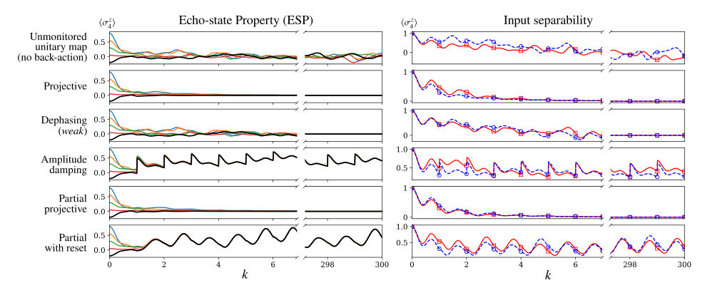
<figcaption class="paper-figure-caption"><b>Fig 4.</b> FIG. 4. Dynamics of ⟨𝜎𝑧 4 ⟩for the input-dependent unitary map in Eq. (22) with disordered Ising-Hamiltonian evolution under different measurement schemes. The left panels show the dynamics starting from five different initial reservoir states under the same input sequence, while the right panels show the dynamics generated by two different input sequences with a fixed initial state (|0⟩⟨0|). Unmonitored unitary maps (no back-action) are not suitable for quantum reservoir computing, as they fail to satisfy the echo-state property (ESP). Projective, dephasing, and partial projective measurement schemes are also unsuitable, since although they satisfy the ESP, the asymptotic state is input...</figcaption>
</figure>
<figure class="paper-figure-card">
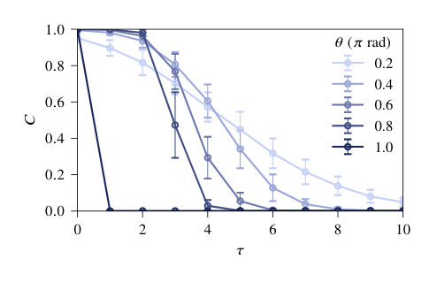
<figcaption class="paper-figure-caption"><b>Fig 5.</b> FIG. 5. Correlation between the predicted and target time series for the linear short-term memory (STM) task for different mea- surement strengths 𝜃of the Amplitude Damping measurement channel following the unitary unmonitored map defined in Eq. (22) with Ising Hamiltonian evolution. We recall that 𝜃= 𝜋cor- responds to a projective measurement with posterior reset, while 𝜃→0 represents a weak measurement. Error bars indicate the standard deviation obtained with 100 random reservoir parameters and random input series.</figcaption>
</figure>
</div>

<p><strong>Summary.</strong> This paper establishes a general theory for Quantum Reservoir Computing by rigorously incorporating the effects of online quantum measurements. It unifies various monitoring protocols under a single framework, showing that measurement back-action can actively provide necessary dissipation for computation. This work provides a systematic methodology for designing quantum reservoirs using controlled quantum measurement engineering.</p>
<p><strong>Why it may be interesting.</strong> It provides a systematic quantum measurement engineering approach to design reservoir architectures, treating measurement back-action not just as noise but as a tunable computational resource essential for non-unitary processing.</p>
<details>
<summary>Detailed structure</summary>
<p><strong>Main problem.</strong> Developing a general theoretical framework for Quantum Reservoir Computing (QRC) that systematically incorporates the effects of online quantum measurements.</p>
<p><strong>Main result.</strong> The theory unifies various monitoring protocols, demonstrating that measurement back-action can be a controllable resource providing necessary dissipation for QRC. It establishes criteria for when monitored dynamics achieve desirable properties like the echo-state property.</p>
<p><strong>Method.</strong> The framework is built upon indirect quantum measurements using Positive Operator-Valued Measures (POVMs) to model sequential monitoring, unifying projective, weak, partial, and dissipative protocols into a single mathematical structure.</p>
<p><strong>Model / system.</strong> The system involves quantum reservoirs undergoing temporal data processing where the evolution is interleaved between unmonitored dynamics ($\Lambda_k$) and stochastic measurement operations ($M$).</p>
<p><strong>Key observables.</strong> Echo-state property, fading memory, input separability, and the trade-off balance between information extraction and measurement-induced disturbance.</p>
<p><strong>Important parameters / regimes.</strong> The strength of monitoring (e.g., controlled by parameters like $   heta$ in engineered measurements) and time multiplexing schedules are key control knobs.</p>
<p><strong>Assumptions / limitations.</strong> Existing QRC proposals often neglect online measurement effects, which the paper aims to correct by providing a unified treatment.</p>
<p><strong>Figures summary.</strong> Figures illustrate monitored dynamics as interleaved unmonitored evolution and stochastic measurements, showing how engineered probes allow for tunable back-action (e.g., dephasing vs. amplitude damping).</p>
<p><strong>Paper structure.</strong> The paper first introduces the challenge of monitoring in QRC, then develops the general theory using POVMs to unify measurement types. It derives necessary and sufficient conditions for key QRC properties under monitored dynamics.</p>
</details>
<details>
<summary>Abstract</summary>
<p>Quantum reservoir computing (QRC) provides a powerful framework for processing temporal data using quantum dynamics, but incorporating measurements into the reservoir remains a fundamental challenge and distinctive feature with respect to classical settings. The induced back-action can vary from a source of disturbance to a computational resource, as measurement deeply modifies the dynamics underlying temporal processing. Existing approaches have treated specific monitoring schemes independently, missing the common physical principles governing online quantum reservoirs. Here we develop a general theory of monitored quantum reservoir computing based on indirect quantum measurements, which unifies projective, weak, partial, and dissipative monitoring protocols within a single operational framework. Measurement back-action can serve as a controllable resource, providing the effective dissipation and non-unital dynamics required for successful QRC, even when the underlying unmonitored evolution is unsuitable. We derive general criteria under which monitored dynamics satisfy the echo-state property, fading memory, and input separability, including a necessary and sufficient condition for emergent strict contractivity. By comparing different monitoring schemes under a common reference dynamics, we show that these protocols are not interchangeable parameterizations to be optimized for peak performance, but rather constitute qualitatively distinct routes to computational capability, each enabled by the interplay between information extraction and measurement-induced disturbance -- a trade-off that can be further shaped through time multiplexing. Our results provide a unified theoretical foundation for online monitored quantum reservoir computing and establish quantum measurement engineering as a systematic approach for designing reservoir architectures across different quantum platforms.</p>
</details>
<p><sub><a href="#top">↑ back to top</a></sub></p>

<p><a id="paper-2607.15132"></a></p>
<h3 id="periodic-orbits-and-quantum-many-body-scars-in-integrable-spin-chains"><a href="http://arxiv.org/abs/2607.15132v1">Periodic orbits and quantum many-body scars in integrable spin chains</a></h3>
<p><strong>Authors:</strong> Elena Petrova, Maksym Serbyn, Marko Ljubotina<br>
<strong>Type:</strong> theory · <strong>Category:</strong> statistical mechanics · <strong>PDF:</strong> <a href="https://arxiv.org/pdf/2607.15132v1">https://arxiv.org/pdf/2607.15132v1</a><br>
<strong>Analysis basis:</strong> full PDF text, analyzed in chunks
<strong>Topic relevance:</strong> 🔥 <code>scars &amp; prethermalization</code> <strong>5/5</strong> · <code>non-equilibrium dynamics</code> <strong>3/5</strong> · <code>entanglement &amp; information structure</code> <strong>2/5</strong> · <code>non-equilibrium universality</code> <strong>2/5</strong> · <code>Keldysh / 2PI / non-Gaussian methods</code> <strong>1/5</strong> · <code>analog quantum simulation</code> <strong>1/5</strong> · <code>exotic spin models in light-matter</code> <strong>1/5</strong> · <code>spintronics-quantum-optics interface</code> <strong>1/5</strong></p>
<div class="figure-strip-hint">↔ Scroll figures horizontally</div>
<div class="paper-figures-scroll">
<figure class="paper-figure-card">
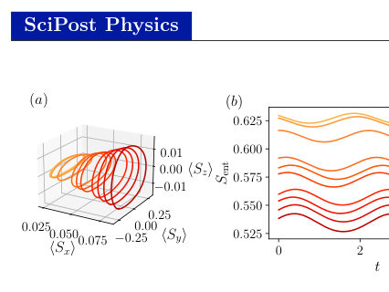
<figcaption class="paper-figure-caption"><b>Fig 1.</b> Figure 1: (a) Local observables along the periodic orbit found at bond dimension χ = 2 for the XYZ Hamiltonian (Jx = 1, Jy = 0.8, ∆= −0.5). By slightly perturbing an orbit and re-optimising it with the gradient descent algorithm, we can continuously track the same orbit across different energy shells. (b) Smooth variation of the entanglement entropy of the orbit across different energy shells. (c) Integrated leakage for different energies. Although the entanglement entropy of the orbit decreases with energy, the leakage increases.</figcaption>
</figure>
<figure class="paper-figure-card">
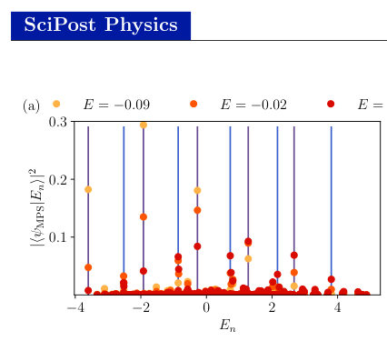
<figcaption class="paper-figure-caption"><b>Fig 2.</b> Figure 2: (a) Overlap of the MPS state with eigenstates of the Hamiltonian for L = 14. Purple and blue lines correspond to the eigenstates that contribute most to the scars. (b) Entanglement entropy of the eigenstates of the XYZ Hamiltonian. Purple and blue dots correspond to the eigenstates that contribute most to the scars. The two sets contain states that are approximately equidistant, which can give rise to periodic dynamics. As the energy of the scar changes, it slowly shifts from the purple eigenstates to a combination of purple and blue. (c) Density of states showing no atypical behaviour in the spectrum.</figcaption>
</figure>
<figure class="paper-figure-card">
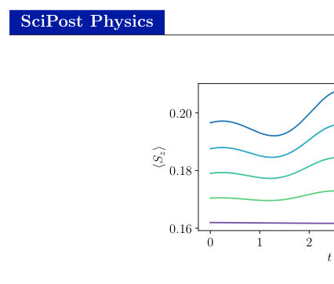
<figcaption class="paper-figure-caption"><b>Fig 3.</b> Figure 3: Evolution of the magnetisation density ⟨Sz(t)⟩along the orbit as the Hamiltonian is deformed from the XXZ point at ∆/J = −1.1 towards the XYZ regime by varying Jy. At the XXZ point, the U(1) symmetry implies conservation of the total magnetisation. Although this conservation need not be reproduced exactly by the projected TDVP dynamics, we observe that the magnetisation remains constant at the XXZ point and becomes time-dependent as Jy is tuned away from Jx, thereby breaking the U(1) symmetry.</figcaption>
</figure>
<figure class="paper-figure-card">
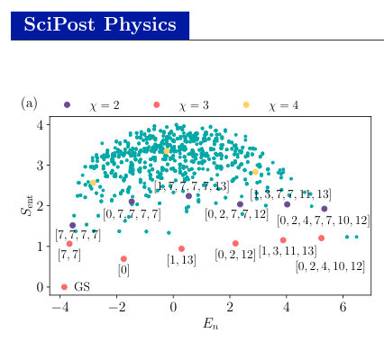
<figcaption class="paper-figure-caption"><b>Fig 4.</b> Figure 4: (a) Entanglement entropy of eigenstates of the XXZ chain at L = 14, ∆= −1.1, with dots marking the eigenstates that contribute most to the scars at E/L = 0.046 with χ = 2, 3, 4. The numbers in brackets are the Bethe quantum numbers {Ij} of the corresponding eigenstate. (b) The maximum overlap with the scar orbit as a function of the system size L (XXZ chain, ∆= −1.1, χ = 2). The supporting eigenstate for each L decomposes into a “core” of 2n identical roots at I = L/2 together with zero-momentum dressing units: symmetric pairs {a, L−a} and, when present, a lone zero-momentum magnon at I = 0. Although the maximum overlap decays exponentially with system size, its decay is...</figcaption>
</figure>
<figure class="paper-figure-card">
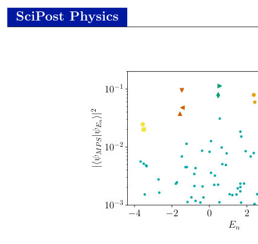
<figcaption class="paper-figure-caption"><b>Fig 5.</b> Figure 5: Dependence of the overlap between the scar state and the Hamiltonian eigenstates on the size of the I = L/2 core in the Bethe quantum-number con- figuration at L = 14, ∆= −1.1. Each colour corresponds to a distinct dressing pattern. Within each pattern, the states differ only in the number of copies of I = L/2 and have comparable energies and overlaps with the χ = 2 MPS orbit, thereby forming a tower. Adding a pair of roots with I = L/2 to the core shifts the energy by an amount much smaller than the spacing between the adjacent towers.</figcaption>
</figure>
</div>

<p><strong>Summary.</strong> This paper connects the concept of quantum many-body scars—non-thermalizing states—to the mathematical structure of integrable spin chains. By applying a periodic-orbit framework and utilizing the Bethe ansatz, the authors analytically derive scar features, showing that these dynamics are governed by specific zero-momentum magnon pair excitations within the model's exact solution.</p>
<p><strong>Why it may be interesting.</strong> This work provides deep theoretical insight into non-equilibrium dynamics in many-body systems, linking semiclassical concepts (periodic orbits) directly to the exact algebraic solutions of integrable quantum models, which is crucial for understanding thermalization boundaries.</p>
<details>
<summary>Detailed structure</summary>
<p><strong>Main problem.</strong> The research aims to understand quantum many-body scars—states that exhibit periodic revival dynamics instead of thermalization—and establish a rigorous connection between this scar phenomenology and the algebraic structure inherent in integrable models.</p>
<p><strong>Main result.</strong> The authors successfully connect the periodic-orbit picture of scarring to the Bethe ansatz framework, analytically explaining equidistant tower spacing by showing it arises from zero-momentum magnon pair decoupling within the Bethe equations.</p>
<p><strong>Method.</strong> They apply the periodic-orbit framework using an energy-resolved approach combined with the explicit algebraic structure provided by solving the Bethe ansatz for the integrable XYZ/XXZ spin chain.</p>
<p><strong>Model / system.</strong> The primary system is the integrable XYZ/XXZ spin-1/2 chain, described by a Hamiltonian involving nearest-neighbor couplings ($J_x, J_y, \Delta$). The analysis extends to include a transverse field to study the persistence of scarring when integrability is broken.</p>
<p><strong>Key observables.</strong> Local observables ($\langle S_x 
angle, \langle S_y 
angle, \langle S_z 
angle$), entanglement entropy ($S_{	ext{ent}}$), and integrated leakage ($\Gamma$).</p>
<p><strong>Important parameters / regimes.</strong> The system is analyzed across different energy shells and by tuning the Hamiltonian parameters from XXZ to XYZ, as well as by adding a transverse field.</p>
<p><strong>Assumptions / limitations.</strong> The analysis relies on the applicability of the periodic-orbit framework and the ability to resolve supporting eigenstates using the Bethe ansatz formalism.</p>
<p><strong>Figures summary.</strong> Figures illustrate local observables along tracked orbits, the variation of entanglement entropy across energy shells, and the overlap between the variational MPS state and exact Bethe eigenstates, showing clear tower structures.</p>
<p><strong>Paper structure.</strong> The paper develops an energy-resolved periodic-orbit approach for the integrable chain. It identifies scarred families whose supporting states are resolved via Bethe quantum numbers, analytically deriving scar features from magnon pair decoupling. Finally, it demonstrates this structure persists when integrability is broken by a transverse field.</p>
</details>
<details>
<summary>Abstract</summary>
<p>Quantum many-body scars provide an exception to generic thermalising dynamics, but their relation to integrability remains unclear. Here we apply the periodic-orbit framework to the integrable XYZ/XXZ spin-1/2 chain, developing an energy-resolved approach that enables us to locate and track periodic orbits across the spectrum. We identify families of scarred orbits and resolve their supporting eigenstates in terms of Bethe-ansatz quantum numbers, revealing a common string core dressed by zero-momentum magnon pairs. This allows us to reconstruct both the scarred eigenstates and the associated towers directly within the Bethe ansatz, and explain the equidistant tower spacing analytically from the decoupling of zero-momentum magnon pairs in the Bethe equations, providing a microscopic realisation of scar phenomenology in an integrable setting. We further show that this structure persists upon breaking integrability with a transverse field, with the periodic orbits continuing to govern the dynamics. Our results establish a direct connection between the periodic-orbit picture of quantum scarring and the algebraic structure of integrable models, showing that key features of scar dynamics can be understood analytically within the Bethe ansatz framework.</p>
</details>
<p><sub><a href="#top">↑ back to top</a></sub></p>

<p><a id="paper-2607.15089"></a></p>
<h3 id="an-experimental-pathway-towards-an-exact-theory-of-strong-coupling"><a href="http://arxiv.org/abs/2607.15089v1">An experimental pathway towards an exact theory of strong coupling</a></h3>
<p><strong>Authors:</strong> Eugenia Pyurbeeva, Ronnie Kosloff<br>
<strong>Type:</strong> both · <strong>Category:</strong> statistical mechanics · <strong>PDF:</strong> <a href="https://arxiv.org/pdf/2607.15089v1">https://arxiv.org/pdf/2607.15089v1</a><br>
<strong>Analysis basis:</strong> full PDF text, analyzed in chunks
<strong>Topic relevance:</strong> 🔥 <code>non-equilibrium dynamics</code> <strong>4/5</strong> · <code>correlated / nonlocal dissipation</code> <strong>3/5</strong> · <code>driven-dissipative phase transition</code> <strong>3/5</strong> · <code>methods for driven-dissipative</code> <strong>3/5</strong> · <code>non-equilibrium universality</code> <strong>3/5</strong> · <code>Keldysh / 2PI / non-Gaussian methods</code> <strong>2/5</strong> · <code>Kondo &amp; dissipative impurity</code> <strong>2/5</strong> · <code>measurement-induced transitions</code> <strong>2/5</strong> · <code>quantum measurements</code> <strong>2/5</strong> · <code>analog quantum simulation</code> <strong>1/5</strong> · <code>entanglement &amp; information structure</code> <strong>1/5</strong> · <code>exotic spin models in light-matter</code> <strong>1/5</strong> · <code>scars &amp; prethermalization</code> <strong>1/5</strong></p>
<div class="figure-strip-hint">↔ Scroll figures horizontally</div>
<div class="paper-figures-scroll">
<figure class="paper-figure-card">
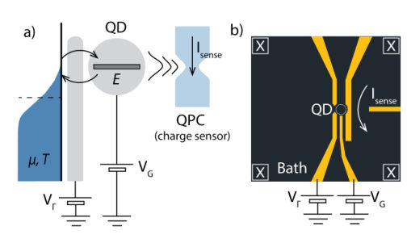
<figcaption class="paper-figure-caption"><b>Fig 1.</b> FIG. 1. a) The system setup. A quantum dot with addition energy E, controlled by a gate voltage VG exchanges elec- trons with a thermal bath, characterised by a temperature and chemical potential (T and µ). The coupling strength Γ is controlled by a side-gate voltage VΓ. A quantum point con- tact (QPC) located close to it acts as a charge sensor. b) A CAD layout of the gates for a device shown in panel (a).</figcaption>
</figure>
<figure class="paper-figure-card">
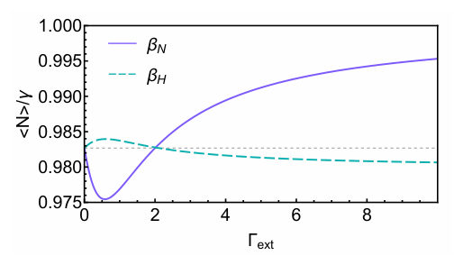
<figcaption class="paper-figure-caption"><b>Fig 2.</b> FIG. 2. A sample dependence of mean population in the presence of external dephasing in ˆ N and ˆH as a function of noise intensity, Γext, standing for ΓN or ΓH. In the case plotted, Γ = 0.4, φ = 0.2.</figcaption>
</figure>
<figure class="paper-figure-card">

<figcaption class="paper-figure-caption"><b>Fig 3.</b> Figure 2 shows the dependence of the mean population of the quantum dot, βN and βH as a function of the ex- ternal dephasing strength ΓN or ΓH, shown as Γext. In the weak noise regime the dephasing in ˆN, as expected, leads to a lower mean population, while the dephasing in ˆH increases it. The latter is due to the fact that de- phasing destroys the components of the density matrix orthogonal to the dephasing operator, which, in the case of ˆH are i[ ˆH, ˆN] and −sin φ ˆN + cos φ ˆD. The negative sign in ˆN in the second vector leads to a restoration of mean population. In the strong dephasing regime, how- ever, for the noise in ˆN the destruction of the density matrix components orthogonal...</figcaption>
</figure>
</div>

<p><strong>Summary.</strong> This paper tackles the challenge of modeling strong coupling in open quantum systems using a generalized GKLS master equation. It derives an exact theoretical description based on three key parameters ($\gamma, \Gamma, \phi$) and proposes a concrete experimental measurement scheme utilizing a solid-state quantum dot to determine these fundamental physical constants.</p>
<p><strong>Why it may be interesting.</strong> This work directly addresses non-equilibrium dynamics and thermalization in strongly coupled open systems, which is central to modern quantum thermodynamics and mesoscopic physics.</p>
<details>
<summary>Detailed structure</summary>
<p><strong>Main problem.</strong> The paper aims to develop an exact theoretical description of strong coupling effects in open quantum systems, where standard master equation approaches fail.</p>
<p><strong>Main result.</strong> They propose a feasible experimental protocol using a solid-state quantum dot to measure the fundamental parameters ($\gamma, \Gamma, \phi$) governing this strongly coupled regime.</p>
<p><strong>Method.</strong> The theory is built upon generalizing the GKLS master equation and analyzing its stationary state solutions in a specific basis derived from the system Hamiltonian and charge operator.</p>
<p><strong>Model / system.</strong> The model is a two-level system (quantum dot) strongly coupled to an electron bath. The dynamics are governed by a generalized GKLS master equation, analyzed using parameters related to coupling strengths ($\Gamma$) and detailed balance analogues ($\gamma$).</p>
<p><strong>Key observables.</strong> The expectation value of the number operator, $\langle\hat{N}
angle$, is the primary measurable observable used in the proposed experimental protocol.</p>
<p><strong>Important parameters / regimes.</strong> Three key parameters are identified: $\gamma$ (analogue to detailed balance), $\Gamma$ (effective coupling strength), and $\phi$ (related to the Hamiltonian basis).</p>
<p><strong>Assumptions / limitations.</strong> The framework relies on purely algebraic manipulations of the GKLS equation, and a major practical assumption is the ability to implement strong projecting measurements in the quantum dot.</p>
<p><strong>Figures summary.</strong> Figure 2 illustrates how the mean population ($\langle\hat{N}
angle$) changes when subjected to controlled dephasing noise applied either to the number operator ($eta_N$) or the Hamiltonian ($eta_H$).</p>
<p><strong>Paper structure.</strong> The paper first establishes the theoretical framework by generalizing the GKLS equation for strong coupling. It then details how this theory maps onto a physical quantum dot setup, outlining specific measurement protocols using QPC sensing to extract the three unknown parameters.</p>
</details>
<details>
<summary>Abstract</summary>
<p>We employ a mathematically equivalent form of the GKLS master equation to arrive at an exact theoretical description of a two-level system strongly coupled to the environment. The framework, while intuitive, shedding light on the physics of the problem, and agreeing with existing results, such as thermalisation to a non-canonical state, is based around three parameters that are unknown outside of the weak coupling regime -- the analogue to the detailed balance relation, and two coupling strength constants. As a way forward, we propose a feasible experimental protocol based on a solid-state electronic quantum dot device, through which the fundamental parameters of the problem can be revealed, which would further the fundamental understanding of strong coupling.</p>
</details>
<p><sub><a href="#top">↑ back to top</a></sub></p>

<p><a id="paper-2607.15276"></a></p>
<h3 id="locality-of-deep-thermalisation-through-the-lens-of-entanglement-teleportation"><a href="http://arxiv.org/abs/2607.15276v1">Locality of deep thermalisation through the lens of entanglement teleportation</a></h3>
<p><strong>Authors:</strong> Saptarshi Mandal, Alan Sherry, Sthitadhi Roy<br>
<strong>Type:</strong> theory · <strong>Category:</strong> statistical mechanics · <strong>PDF:</strong> <a href="https://arxiv.org/pdf/2607.15276v1">https://arxiv.org/pdf/2607.15276v1</a><br>
<strong>Analysis basis:</strong> full PDF text, analyzed in chunks
<strong>Topic relevance:</strong> 🔥 <code>entanglement &amp; information structure</code> <strong>4/5</strong> · 🔥 <code>measurement-induced transitions</code> <strong>4/5</strong> · <code>analog quantum simulation</code> <strong>3/5</strong> · <code>non-equilibrium dynamics</code> <strong>3/5</strong> · <code>quantum measurements</code> <strong>3/5</strong> · <code>correlated / nonlocal dissipation</code> <strong>2/5</strong> · <code>non-equilibrium universality</code> <strong>2/5</strong> · <code>driven-dissipative phase transition</code> <strong>1/5</strong> · <code>methods for driven-dissipative</code> <strong>1/5</strong> · <code>scars &amp; prethermalization</code> <strong>1/5</strong></p>
<div class="figure-strip-hint">↔ Scroll figures horizontally</div>
<div class="paper-figures-scroll">
<figure class="paper-figure-card">
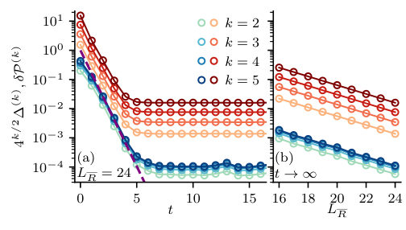
<figcaption class="paper-figure-caption"><b>Fig 1.</b> FIG. 1. Numerical results for the minimal model in Eq. 10. (a) ∆(k) (rescaled by 4k/2) and δP(k) as a function of t for different values of k with the former in red tones and the latter in blue tones. The data show an exponential decay with t where both the quantities have the same rate which is independent of k. The purple dashed line shows ∼e−γt</figcaption>
</figure>
<figure class="paper-figure-card">
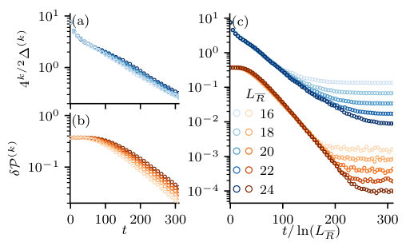
<figcaption class="paper-figure-caption"><b>Fig 2.</b> FIG. 2. Numerical results for (a) ∆(k) and (b) δP(k) with k = 4 for the brickwork circuit described in Eqs. (14)-(16). Darker colours denote larger system sizes LR. The data show that at O(1) intermediate times ∆(k) and δP(k) grow with LR, indicating that the deep thermalisation timescale for the ensemble ER, which is constrained by entanglement telepor- tation between R1 and R2, grows with LR. (c) Scaling time, t, by ln LR collapses the data for different LR onto a common curve indicating that the timescale scales as t∗(LR) ∼ln LR.</figcaption>
</figure>
<figure class="paper-figure-card">
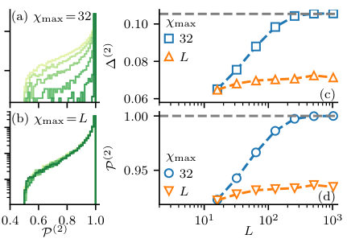
<figcaption class="paper-figure-caption"><b>Fig 3.</b> FIG. 3. Results for the RTN states of the form in Eq. (18). (a)-(b) Distributions of the bipartite purity, P(2) between R1 and R2 over several instances of | ˜ψRTN⟩, for maximum bond dimension, χmax, (a) finite and (b) equal to L. Data are for L = 32, 64, 128, 256, 512, 1024 where darker colours denote larger L. (c) Average P(2) and (d) Average ∆(2) as a function of L. The grey dashed lines denote the corresponding values when R1 and R2 are decoupled and described by independent Gaussian random states.</figcaption>
</figure>
</div>

<p><strong>Summary.</strong> This paper rigorously examines the concept of locality during deep thermalization by comparing entanglement teleportation to state ensemble convergence. It shows that while measurements can induce apparent non-local effects, generic local interactions enforce an emergent locality characterized by logarithmic time scaling with distance. This provides a fundamental constraint on how fast quantum information can spread in realistic physical systems.</p>
<p><strong>Why it may be interesting.</strong> This work directly addresses non-equilibrium dynamics in many-body systems, providing quantitative bounds on how quickly quantum information spreads and thermalizes across spatially separated regions, which is crucial for understanding quantum computation limits.</p>
<details>
<summary>Detailed structure</summary>
<p><strong>Main problem.</strong> The study investigates whether deep thermalization, a process driven by projective measurements on an environment, exhibits emergent locality when the system is partitioned into causally disconnected regions.</p>
<p><strong>Main result.</strong> In generic locally interacting systems, both deep thermalization and entanglement teleportation exhibit timescales that scale logarithmically with the spatial separation ($\propto \ln L$), demonstrating emergent locality. Genuine non-locality only appears in special circuits where randomness transmission is perfect.</p>
<p><strong>Method.</strong> The analysis employs theoretical tools including moment calculations ($\Delta^{(k)}$), bipartite purity measures ($\delta P(k)$), and comparing results from minimal models, spatially extended brickwork circuits, and Random Tensor Networks (RTNs).</p>
<p><strong>Model / system.</strong> The work considers quantum systems undergoing unitary evolution followed by projective measurements. Models range from simple minimal setups to 1D locally interacting chains with specific Hamiltonians ($H = \sum [u_j \otimes u_{j+1}] e^{-i	au H} [\dots]$).</p>
<p><strong>Key observables.</strong> Deep thermalization deviation ($\Delta^{(k)}$), entanglement teleportation measure ($\delta P(k)$), and bipartite purity (Pann).</p>
<p><strong>Important parameters / regimes.</strong> System size/separation ($L$ or $L_R$), measurement depth, and the scaling of timescales with separation ($\ln L$).</p>
<p><strong>Assumptions / limitations.</strong> The analysis often assumes generic local interactions; perfect non-locality is restricted to special circuits transmitting randomness perfectly.</p>
<p><strong>Figures summary.</strong> Figures show numerical decay rates for $\Delta^{(k)}$ and $\delta P(k)$ in the minimal model, demonstrating exponential decay. For the brickwork circuit, data collapse onto universal curves confirms the $\ln L$ scaling of the characteristic timescale $t^*$.</p>
<p><strong>Paper structure.</strong> The paper progresses by first establishing diagnostics ($\Delta^{(k)}, \delta P(k)$) and comparing them to Haar limits. It then analyzes a minimal model showing fast thermalization, before moving to spatially extended circuits where it establishes the $\ln L$ scaling characteristic of emergent locality.</p>
</details>
<details>
<summary>Abstract</summary>
<p>Deep thermalisation characterises the emergence of universal quantum state ensembles on subsystems due to projective measurements on their complement. We study the notion of locality, or lack thereof, in this phenomenon by considering a subsystem partitioned into two disjoint subregions which remain causally disconnected at all times under unitary dynamics. We show that the onset of deep thermalisation in this geometry is fundamentally bounded by measurement-induced entanglement teleportation between the subregions. While measurements on the environment generate entanglement across the disconnected partitions -- suggesting an apparent non-locality -- we demonstrate that generic locally interacting systems exhibit an emergent locality. Specifically, the timescales for both deep thermalisation and entanglement teleportation scale logarithmically with the distance separating the subregions. Exceptions to this include special circuits where the randomness of the measurement outcomes is perfectly transmitted to the ensemble of states of the subsystem, conditioned on the outcomes; in such cases the timescale for deep thermalisation is finite leading to genuine non-locality.</p>
</details>
<p><sub><a href="#top">↑ back to top</a></sub></p>

<p><a id="paper-2607.14222"></a></p>
<h3 id="magic-without-entanglement-exact-revivals-and-their-fisher-information-origin"><a href="http://arxiv.org/abs/2607.14222v1">Magic Without Entanglement: Exact Revivals and Their Fisher Information Origin</a></h3>
<p><strong>Authors:</strong> Rishabh Jha, Karun Gadge<br>
<strong>Type:</strong> theory · <strong>Category:</strong> statistical mechanics · <strong>PDF:</strong> <a href="https://arxiv.org/pdf/2607.14222v1">https://arxiv.org/pdf/2607.14222v1</a><br>
<strong>Analysis basis:</strong> full PDF text, analyzed in chunks
<strong>Topic relevance:</strong> 🔥 <code>entanglement &amp; information structure</code> <strong>4/5</strong> · 🔥 <code>non-equilibrium dynamics</code> <strong>4/5</strong> · <code>analog quantum simulation</code> <strong>3/5</strong> · <code>non-equilibrium universality</code> <strong>3/5</strong> · <code>methods for driven-dissipative</code> <strong>2/5</strong> · <code>scars &amp; prethermalization</code> <strong>2/5</strong> · <code>Keldysh / 2PI / non-Gaussian methods</code> <strong>1/5</strong> · <code>correlated / nonlocal dissipation</code> <strong>1/5</strong> · <code>driven-dissipative phase transition</code> <strong>1/5</strong></p>
<div class="figure-strip-hint">↔ Scroll figures horizontally</div>
<div class="paper-figures-scroll">
<figure class="paper-figure-card">
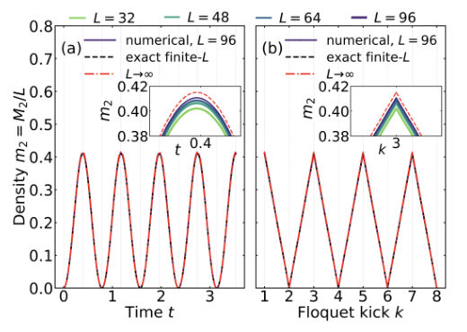
<figcaption class="paper-figure-caption"><b>Fig 1.</b> Figure 1: Exact magic-density revivals. Left: open-chain quench with J = 1 and h = 0, where M (L) 2 (t)/L = (1 −1/L)m2(Jt). Right: stroboscopic kicked-Ising dy- namics at g = π/2 and θ = π/8, where M (L) 2,F (k)/L = (1 −1/L)m2(kθ); the magic revives at even kick num- ber, with the first nontrivial revival at k = 2. System sizes are L = 32, 48, 64, 96; the red curve is the thermo- dynamic prediction m2(ϑ), with ϑ = Jt for the quench and ϑ = kθ for the kicked circuit.</figcaption>
</figure>
<figure class="paper-figure-card">
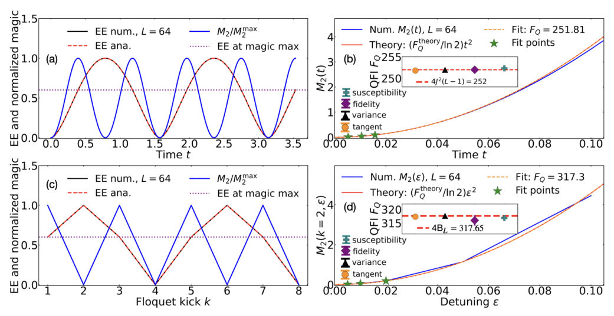
<figcaption class="paper-figure-caption"><b>Fig 2.</b> Figure 2: Magic, entanglement, and tangent curvature. Top row: open-chain quench with J = 1, h = 0, and L = 64. Panel (a) compares the normalized magic M2/M max 2 with the entanglement entropy, showing their different revival patterns. Panel (b) shows the initial quadratic growth of M2(t) for small time t near the stabilizer point t = 0, together with the tangent-theorem prediction and independent quantum-Fisher-information benchmarks from the tangent coefficient, the variance, the fidelity curvature, and the dynamical susceptibility; here FQ = 4(L −1) = 252. Bottom row: stroboscopic kicked-Ising dynamics at g = π/2, θ = π/8, and L = 64. Panel (c) compares the corresponding Floquet magic...</figcaption>
</figure>
<figure class="paper-figure-card">
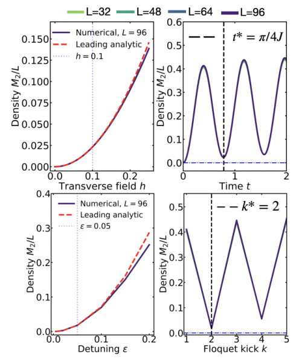
<figcaption class="paper-figure-caption"><b>Fig 3.</b> Figure 3: Quadratic lifting of exact magic revivals. Top row: quench revival at t⋆= π/(4J), detuned by the transverse field h/J where J = 1. Bottom row: two- kick Floquet revival at g = π/2, θ = π/8, detuned by ε = g −π/2. System sizes are L = 32, 48, 64, 96; the leading quadratic predictions are Eqs. (17) and (18).</figcaption>
</figure>
</div>

<p><strong>Summary.</strong> This work develops theoretical principles showing how 'Magic' and Entanglement behave independently in many-body systems undergoing time evolution. By analyzing specific 1D models, the authors prove that magic resources can survive when entanglement vanishes in the thermodynamic limit. The paper provides concrete mathematical bridges linking local resource measures like QFI to measurable quantities like Rényi entropy curvature.</p>
<p><strong>Why it may be interesting.</strong> It provides a powerful, quantitative diagnostic tool (QFI vs. Magic) that can be measured experimentally or simulated to characterize non-equilibrium quantum dynamics beyond simple entanglement measures.</p>
<details>
<summary>Detailed structure</summary>
<p><strong>Main problem.</strong> The paper aims to establish an exact framework connecting 'Magic' (a non-Clifford quantum resource) and Entanglement in the dynamics of many-body quantum systems.</p>
<p><strong>Main result.</strong> It proves that for certain graph structures, finite magic density can persist even when entanglement density vanishes in the thermodynamic limit. Furthermore, it establishes a local relationship between Quantum Fisher Information and the curvature of the second stabilizer Rényi entropy at revival points.</p>
<p><strong>Method.</strong> The authors employ theoretical tools like stabilizer Rényi entropies ($M_\alpha$), Quantum Fisher Information (QFI), and graph-theoretic constructions (Forest Theorem) to analyze time evolution in the thermodynamic limit.</p>
<p><strong>Model / system.</strong> The study analyzes quantum many-body systems using models such as the Ising quench, kicked Floquet chains, and general commuting Ising dynamics on forest graphs. The analysis is performed for 1D spin chains.</p>
<p><strong>Key observables.</strong> Magic density ($\mu_2$), Entanglement Entropy ($S_{EE}$), Quantum Fisher Information (QFI) curvature, and revival periods.</p>
<p><strong>Important parameters / regimes.</strong> System size ($L 	o \infty$ limit), detunings ($\delta, \eta, \epsilon$), and the structure of the underlying graph (forest vs. cyclic).</p>
<p><strong>Assumptions / limitations.</strong> The tangent relation is a local, quadratic-order statement; the forest theorem applies specifically to acyclic graphs.</p>
<p><strong>Figures summary.</strong> Figures compare normalized magic density revivals against entanglement entropy for quench and Floquet dynamics, showing distinct revival patterns and confirming predicted initial quadratic growth rates.</p>
<p><strong>Paper structure.</strong> The paper develops structural theorems (Tangent Theorem, Forest Theorem) relating local resource measures. It applies these to 1D models (Ising quench, kicked chain), deriving exact results for density revivals and analyzing the stability of these minima using variance calculations in the thermodynamic limit.</p>
</details>
<details>
<summary>Abstract</summary>
<p>Magic and entanglement are independent quantum resources, yet their exact relation in many-body dynamics has remained elusive. We uncover two structural principles. First, at any stabilizer state, the curvature of the second stabilizer Rényi entropy under an arbitrary Hermitian generator equals the quantum Fisher information up to a fixed normalization, creating a bidirectional bridge between computational and metrological resources. Second, for commuting Ising evolution on any forest graph, a Clifford pruning circuit yields the full stabilizer-Rényi family at arbitrary size and in any spatial embedding, thereby furnishing a graph-theoretic construction of families with finite magic density and vanishing entanglement density in the thermodynamic limit. We solve two paradigmatic one-dimensional realizations central to quantum simulation -- an Ising quench and a kicked Floquet chain -- exactly for arbitrary system size and directly in the thermodynamic limit, revealing finite magic density with vanishing entanglement density, distinct magic and entanglement revival periods, and Clifford points with zero magic but finite bipartite entanglement. The same tangent geometry fixes initial growth, perturbative revival lifting, and stability of thermodynamic magic minima. Large-scale Pauli-basis matrix-product-state calculations verify all predictions, and the tangent bridge yields a concrete protocol for detecting magic through established quantum-Fisher-information measurements.</p>
</details>
<p><sub><a href="#top">↑ back to top</a></sub></p>

<p><a id="paper-2607.14383"></a></p>
<h3 id="long-lived-memory-in-sliding-spin-chains"><a href="http://arxiv.org/abs/2607.14383v1">Long-lived memory in sliding spin chains</a></h3>
<p><strong>Authors:</strong> Charles Stahl, Ethan Lake<br>
<strong>Type:</strong> theory · <strong>Category:</strong> statistical mechanics · <strong>PDF:</strong> <a href="https://arxiv.org/pdf/2607.14383v1">https://arxiv.org/pdf/2607.14383v1</a><br>
<strong>Analysis basis:</strong> full PDF text, analyzed in chunks
<strong>Topic relevance:</strong> 🔥 <code>non-equilibrium dynamics</code> <strong>4/5</strong> · <code>Frenkel-Kontorova</code> <strong>3/5</strong> · <code>scars &amp; prethermalization</code> <strong>3/5</strong> · <code>driven-dissipative phase transition</code> <strong>2/5</strong> · <code>non-equilibrium universality</code> <strong>2/5</strong> · <code>Keldysh / 2PI / non-Gaussian methods</code> <strong>1/5</strong> · <code>analog quantum simulation</code> <strong>1/5</strong> · <code>correlated / nonlocal dissipation</code> <strong>1/5</strong> · <code>exotic spin models in light-matter</code> <strong>1/5</strong> · <code>methods for driven-dissipative</code> <strong>1/5</strong> · <code>spintronics-quantum-optics interface</code> <strong>1/5</strong></p>
<div class="figure-strip-hint">↔ Scroll figures horizontally</div>
<div class="paper-figures-scroll">
<figure class="paper-figure-card">
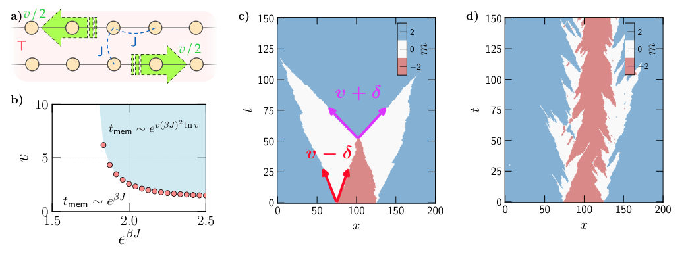
<figcaption class="paper-figure-caption"><b>Fig 1.</b> FIG. 1. a) Schematic of the dynamics. Two ferromagnetically coupled ferromagnetic 1d Ising chains with coupling J slide past one another at relative velocity v, and both couple to a bath at temperature T. b) Scaling of the memory time in the eβJ-v plane. In the white region, the memory time scales like eO(βJ), just as in the equilibrium 1d Ising model. In the blue region, the memory time is enhanced to eO(v(βJ)2 ln v). The pink points mark the crossover between the two, and are drawn by fixing eβJ, and then finding the smallest value of v such that tmem(v) &gt; 10tmem(0) (with the constant 10 chosen rather arbitrarily). c) A spacetime history of the magnetization, with β = ∞, v = 2. The...</figcaption>
</figure>
<figure class="paper-figure-card">
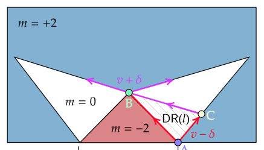
<figcaption class="paper-figure-caption"><b>Fig 2.</b> FIG. 2. How a minority domain of size l is eroded under ideal sliding dynamics with v &gt; 2 in the limit βJ →∞. The white regions have zero magnetization, and are metastable. The red arrows indicate interfaces that move with expected speed v −δ, and the purple arrows those with speed v + δ. The danger region DR(l) indicated by the shaded triangle is the spacetime region where spin flips in the metastable zero- magnetization area can propagate to prevent the erosion of the m = −2 (red) part of the initial minority domain.</figcaption>
</figure>
<figure class="paper-figure-card">
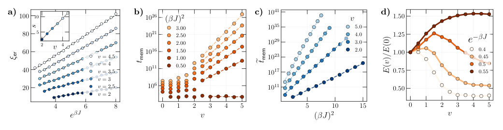
<figcaption class="paper-figure-caption"><b>Fig 3.</b> FIG. 3. a) The erosion length ξer against eβJ for different values of v. The inset shows the slopes s of linear fits of ξer to eβJ</figcaption>
</figure>
<figure class="paper-figure-card">
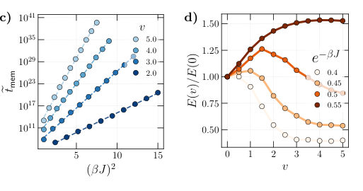
<figcaption class="paper-figure-caption"><b>Fig 4.</b> Fig. 3 b shows the FFS estimate of tmem plotted against v for different values of βJ. As expected, we observe tmem to grow exponentially in v as long as v &gt; 2. Confirming the scaling of tmem with βJ is slightly more subtle. As discussed above, the seeding event where a small minority domain is nucleated contributes a factor of ecβJ to tmem. Creating a minority domain of just size 1 already gives c = 8 (the first flipped spin costs energy ∆E = 6J, and the second costs ∆E = 2J). Since the ecβJ factor can compete with the eO((βJ)2) factor at modest values of βJ, we will find it convenient to get rid of the former by considering dynamics where the nucleation of an initial minority domain is not...</figcaption>
</figure>
<figure class="paper-figure-card">
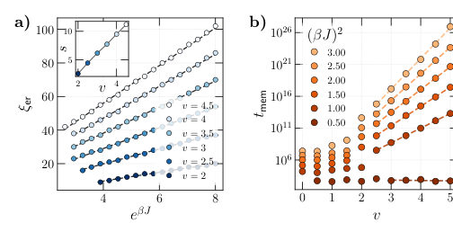
<figcaption class="paper-figure-caption"><b>Fig 5.</b> Fig. 3 a shows the result of measuring (9) in numerics, and confirms the predicted scaling (7) at large enough</figcaption>
</figure>
</div>

<p><strong>Summary.</strong> This paper analyzes a system of two coupled 1D Ising chains driven out of equilibrium by sliding past each other. The authors demonstrate that the resulting magnetic friction dramatically increases the memory time, allowing the system to retain its initial magnetization for much longer than expected at equilibrium. This provides a simple mechanism showing how non-equilibrium driving can stabilize ordered states against thermal decay.</p>
<p><strong>Why it may be interesting.</strong> This work provides an explicit, analytically derived mechanism (magnetic friction) for parametrically slowing down thermalization and enhancing memory retention in low-dimensional magnetic systems, which has parallels in understanding slow relaxation in complex quantum or classical many-body systems.</p>
<details>
<summary>Detailed structure</summary>
<p><strong>Main problem.</strong> The study investigates how physical systems, particularly those driven out of equilibrium, can retain memory of their initial magnetization state.</p>
<p><strong>Main result.</strong> Magnetic friction from sliding chains significantly enhances the system's ability to order and retain memory, increasing the relaxation time exponentially with parameters like $eta J$ and $v$.</p>
<p><strong>Method.</strong> The analysis uses theoretical derivations based on minority domain dynamics, comparing shearing rates to contraction rates to estimate the characteristic memory time scale.</p>
<p><strong>Model / system.</strong> The model is two ferromagnetic one-dimensional Ising chains coupled to a thermal bath, driven out of equilibrium by sliding past each other at a constant relative speed $v$.</p>
<p><strong>Key observables.</strong> Memory time ($t_{	ext{mem}}$), minority domain size ($\xi_{er}$), and steady-state energy $E(v)$.</p>
<p><strong>Important parameters / regimes.</strong> Inverse temperature ($eta$), Ising coupling ($J$), and sliding speed ($v$). The scaling regimes include equilibrium ($v=0$) and non-equilibrium ($v>0$).</p>
<p><strong>Assumptions / limitations.</strong> The analysis assumes that the memory time is finite in the thermodynamic limit for $T>0$, and relies on comparing domain shearing rates to contraction rates.</p>
<p><strong>Figures summary.</strong> Figures schematically show dynamics, plot the enhancement of $t_{	ext{mem}}$ vs. $v$, illustrate minority domain erosion defining a 'danger region,' and confirm scaling laws for $\xi_{er}$ and $t_{	ext{mem}}$.</p>
<p><strong>Paper structure.</strong> The paper progresses by first establishing the memory problem in 1D magnets, then analyzing how sliding introduces a shearing mechanism that prevents rapid thermalization. The core argument builds from comparing equilibrium to non-equilibrium dynamics via domain analysis.</p>
</details>
<details>
<summary>Abstract</summary>
<p>We study a system of two ferromagnetic one-dimensional Ising chains coupled to a thermal bath, which are driven out of equilibrium by being moved past one another at a constant speed. We show that even at modest speeds, magnetic friction between the two chains significantly increases the ability of the system to order. In particular, at inverse temperature $β$, Ising coupling $J$, and sliding speed $v$, the dynamics retains memory of its initial magnetization for a time that increases from $\exp(O(βJ))$ at $v = 0$ to $\exp(O((βJ)^2v\ln v))$ when $v>v_c$, where $v_c$ is a small constant. Magnetic friction thus provides a simple mechanism for parametrically slowing down thermalization in a one-dimensional magnet.</p>
</details>
<p><sub><a href="#top">↑ back to top</a></sub></p>

<p><a id="paper-2607.14232"></a></p>
<h3 id="phonons-in-low-dimensional-confined-systems-emergent-non-reciprocity-in-1d"><a href="http://arxiv.org/abs/2607.14232v1">Phonons in low-dimensional confined systems: Emergent non-reciprocity in 1D</a></h3>
<p><strong>Authors:</strong> Yuan Gao, K. A. Muttalib<br>
<strong>Type:</strong> theory · <strong>Category:</strong> other · <strong>PDF:</strong> <a href="https://arxiv.org/pdf/2607.14232v1">https://arxiv.org/pdf/2607.14232v1</a><br>
<strong>Analysis basis:</strong> full PDF text, analyzed in chunks
<strong>Topic relevance:</strong> 🔥 <code>analog quantum simulation</code> <strong>4/5</strong> · <code>Frenkel-Kontorova</code> <strong>3/5</strong> · <code>methods for driven-dissipative</code> <strong>3/5</strong> · <code>Keldysh / 2PI / non-Gaussian methods</code> <strong>2/5</strong> · <code>driven-dissipative phase transition</code> <strong>2/5</strong> · <code>non-equilibrium dynamics</code> <strong>2/5</strong> · <code>correlated / nonlocal dissipation</code> <strong>1/5</strong> · <code>entanglement &amp; information structure</code> <strong>1/5</strong> · <code>exotic spin models in light-matter</code> <strong>1/5</strong> · <code>non-equilibrium universality</code> <strong>1/5</strong></p>
<div class="figure-strip-hint">↔ Scroll figures horizontally</div>
<div class="paper-figures-scroll">
<figure class="paper-figure-card">
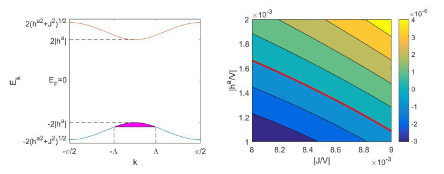
<figcaption class="paper-figure-caption"><b>Fig 1.</b> FIG. 1: Left: Dispersion relation of the model (10), with shaded unstable momentum shell in the effective theory. Right: Phase diagram with |ha/V |, |J /V | as control parameters, for Λ = 0.5. Red line is the boundary between reciprocal (positive values) and non-reciprocal phase (negative values).</figcaption>
</figure>
<figure class="paper-figure-card">
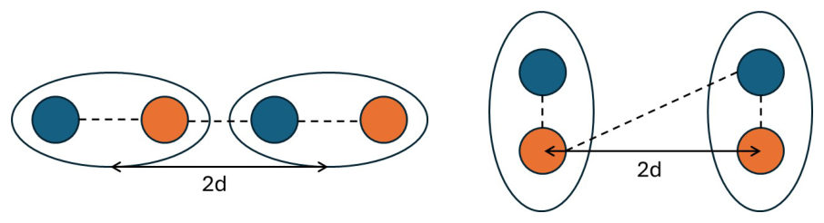
<figcaption class="paper-figure-caption"><b>Fig 2.</b> FIG. 2: Schematic sublattice configurations in realistic basis (left) and featureless basis (right). Dashed lines represent bonds and d = 1 is chosen for original lattice spacing.</figcaption>
</figure>
</div>

<p><strong>Summary.</strong> This theoretical work develops a framework to model phonons in confined 1D systems by mapping displacements to spin variables. It shows that adding anharmonic interactions can induce a phase transition leading to non-reciprocity characterized by broken time-reversal symmetry. This non-reciprocal order is experimentally detectable by measuring the system's response (inductivity) to artificial gauge fields.</p>
<p><strong>Why it may be interesting.</strong> It connects concepts from condensed matter physics (phonons, low dimensions) with emergent quantum phenomena like broken time-reversal symmetry and gauge field response, which are highly relevant to AMO systems.</p>
<details>
<summary>Detailed structure</summary>
<p><strong>Main problem.</strong> The work addresses how conventional phonon descriptions fail for low-dimensional confined systems, proposing a method to capture emergent non-reciprocity arising from out-of-plane confinement.</p>
<p><strong>Main result.</strong> Introducing anharmonicities drives the system through a quantum phase transition into a non-reciprocal state characterized by spontaneous time reversal symmetry breaking (TRSB).</p>
<p><strong>Method.</strong> The authors use a 'soft-corization' mapping to transform displacement fields into spin degrees of freedom, followed by diagonalization and mean-field analysis.</p>
<p><strong>Model / system.</strong> The model is based on a 1D harmonic chain analyzed via an effective Hamiltonian mapped onto bipartite fermions. The system exhibits Dirac fermion behavior at long distances due to confinement.</p>
<p><strong>Key observables.</strong> Nonreciprocity order parameter ($\Delta$), charge current density ($ar{J}_c$), heat current density ($ar{J}_h$), and the change in inductivity ($\delta K$) probed by artificial gauge fields.</p>
<p><strong>Important parameters / regimes.</strong> Gap energy, interaction strength (anharmonicities), and the ratio of coupling constants ($|h_a/V|$ vs $|J/V|$).</p>
<p><strong>Assumptions / limitations.</strong> The analysis is performed at zero temperature ($T=0$) and relies on mapping displacement fields to spin operators.</p>
<p><strong>Figures summary.</strong> Figure 1 illustrates dispersion relations and a phase diagram showing the boundary between reciprocal and non-reciprocal phases; Figure 2 compares sublattice configurations in different bases.</p>
<p><strong>Paper structure.</strong> The paper progresses from establishing the need for confinement modeling (soft-corization) to diagonalizing the resulting Hamiltonian, analyzing symmetry breaking via anharmonicities, and finally quantifying non-reciprocity using inductive current measurements.</p>
</details>
<details>
<summary>Abstract</summary>
<p>An important feature of solid-state or cold atom systems in low dimensions is the restricted oscillations of ionic/atomic degrees of freedom in the confining directions, for which the conventional phonon from canonical quantization is not an ideal description. In this work we propose a general recipe to introduce this feature to otherwise unrestricted systems by mapping displacement fields to spin degrees of freedom. We demonstrate the validity of the approach with a 1D harmonic chain, and the results lead to massive Dirac fermions at long distances, showing the absence of acoustic modes as the signature of confined out-of-plane motion of the entire chain. We then introduce a short-range interaction via anharmonicities and show that for energy scale slightly above the gap, it gives rise to a (quantum) phase transition to a nonreciprocal state with spontaneous time reversal symmetry breaking (TRSB) of the type $\hat{T}^2=+1$. Despite the non-conserved total particle number, the model holds an under-appreciated $U(1)$ symmetry with conserved "polarization charge", so that the nonreciprocity can be probed by measuring the change of inductivity to artificial gauge fields in and out of the ordered phase.</p>
</details>
<p><sub><a href="#top">↑ back to top</a></sub></p>

<p><a id="paper-2607.15252"></a></p>
<h3 id="coulomb-blockade-in-microscopic-material-defects-as-a-source-of-decoherence-and-noise-in-solid-state-quantum-circuits"><a href="http://arxiv.org/abs/2607.15252v1">Coulomb blockade in microscopic material defects as a source of decoherence and noise in solid-state quantum circuits</a></h3>
<p><strong>Authors:</strong> R. Banerjee, L. P. Lindoy, M. Hegedus, A. Hutcheson, T. Hawkins, E. Daghigh-Ahmadi, S. Samaddar, T. Barker, J. P. Goff, A. Ya. Tzalenchuk, I. Rungger, S. E. de Graaf<br>
<strong>Type:</strong> both · <strong>Category:</strong> quantum information and computing · <strong>PDF:</strong> <a href="https://arxiv.org/pdf/2607.15252v1">https://arxiv.org/pdf/2607.15252v1</a><br>
<strong>Analysis basis:</strong> full PDF text, analyzed in chunks
<strong>Topic relevance:</strong> 🔥 <code>QC/QI experiment</code> <strong>4/5</strong> · <code>Kondo &amp; dissipative impurity</code> <strong>3/5</strong> · <code>methods for driven-dissipative</code> <strong>3/5</strong> · <code>Keldysh / 2PI / non-Gaussian methods</code> <strong>2/5</strong> · <code>driven-dissipative phase transition</code> <strong>2/5</strong> · <code>non-equilibrium dynamics</code> <strong>2/5</strong> · <code>analog quantum simulation</code> <strong>1/5</strong> · <code>correlated / nonlocal dissipation</code> <strong>1/5</strong> · <code>non-equilibrium universality</code> <strong>1/5</strong></p>
<div class="figure-strip-hint">↔ Scroll figures horizontally</div>
<div class="paper-figures-scroll">
<figure class="paper-figure-card">
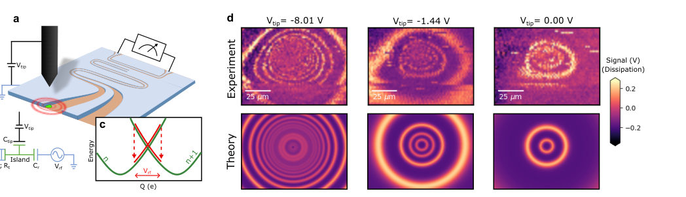
<figcaption class="paper-figure-caption"><b>Fig 1.</b> FIG. 1. Coulomb blockade in tunnel-coupled microscopic islands causes dissipation in superconducting quantum circuits. (a) Schematic of the experimental setup: A conducting scanning probe tip (black) with voltage Vtip is placed above a grounded superconducting resonator, whose S21 response at a frequency freadout slightly off resonance is continuously monitored. A microscopic island (green) acts as a defect coupling to the microwave electric fields of the resonator. Sweeping the tip voltage varies the island’s electrostatic potential, inducing a change in its charge state. (b) Equivalent circuit of the setup. (c) Microwave voltage Vrf from the device drives the system along the energy...</figcaption>
</figure>
<figure class="paper-figure-card">
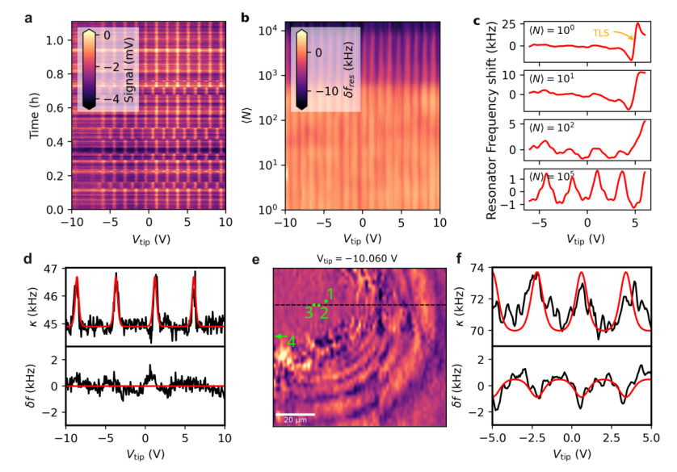
<figcaption class="paper-figure-caption"><b>Fig 2.</b> FIG. 2. Quantifying dissipation and frequency shifts. (a) Measured heterodyne response from the resonator when keeping the tip fixed 10 µm above the defect in Fig. 1 and repeatedly ramping Vtip. A large number of equidistant peaks and stochastic temporal fluctuations of the defect offset charge are observed. Each voltage sweep is 2 seconds long. Defect charge state fluctuations occur on the timescale of minutes. (b) Resonator frequency as a function of tip voltage and resonator driving power for a different defect, showing a Sisyphus response unaffected by power. T = 350 mK, Ztip = 10µm. (c) Resonator transmission and the extracted centre frequency as a function of tip voltage for...</figcaption>
</figure>
<figure class="paper-figure-card">

<figcaption class="paper-figure-caption"><b>Fig 3.</b> FIG. 3. Decoherence parameter space. Theoretical nu- merical evaluation of the expected (a) peak loss rate and (b) frequency shift as a function of defect tunnel resistance Rt and tunnel junction capacitance Cj for a device with fres = 6.7 GHz. The inset in (a) shows the tunnelling resistance Rt at which the maximum dissipation occurs as a function of device frequency. The cross indicates the location in the parameter space for defect 3 detected and fitted to theory in Fig. 2e–f.</figcaption>
</figure>
<figure class="paper-figure-card">

<figcaption class="paper-figure-caption"><b>Fig 4.</b> FIG. 4. Abundance of defects. Spectrogram showing Fourier decomposition of the dataset in Fig. 2e along the black dashed line. See text for explanations. We identify four distinct defects (green dots in Fig. 2e). The concentric ring pattern in Fig. 2e is dominated by defect 3, with defect 4 residing outside of the frame.</figcaption>
</figure>
</div>

<p><strong>Summary.</strong> The authors report discovering a significant source of decoherence in superconducting quantum circuits caused by Coulomb blockade effects within microscopic metallic grains. Using scanning gate microscopy, they distinguish this mechanism from standard TLS defects through unique spectroscopic signatures. Eliminating these grains during fabrication is proposed as a practical method to improve qubit coherence times.</p>
<p><strong>Why it may be interesting.</strong> This work provides a concrete example of how localized, non-equilibrium charge dynamics (Coulomb blockade) can dominate decoherence in solid-state qubits, offering new physical insights beyond simple tunneling models relevant to open quantum systems.</p>
<details>
<summary>Detailed structure</summary>
<p><strong>Main problem.</strong> Identifying intrinsic decoherence sources in solid-state quantum circuits that are distinct from previously understood mechanisms like Two-Level System (TLS) defects.</p>
<p><strong>Main result.</strong> A novel, widespread decoherence mechanism originating from Coulomb blockade and charge tunneling in ubiquitous metallic grains was identified, challenging the TLS-centric view of coherence limitation.</p>
<p><strong>Method.</strong> The study combines scanning gate microscopy on live superconducting circuits with theoretical modeling using an Anderson–Holstein-type impurity model to characterize defect dynamics.</p>
<p><strong>Model / system.</strong> The system involves a metallic grain (acting as an 'electron box') tunnel-coupled to the superconducting circuit reservoir, whose charging energy dictates its discrete charge states. The dynamics are analyzed via microwave transmission spectroscopy ($S_{21}$).</p>
<p><strong>Key observables.</strong> $S_{21}$ microwave transmission response vs. tip voltage; periodic peaks in $S_{21}$ contours (concentric rings); measurable loss rate ($\kappa$) and frequency shift ($\delta f$).</p>
<p><strong>Important parameters / regimes.</strong> Charging energy ($E_c$); tunneling coupling strength ($\Gamma$); operating temperature/power regimes; grain size (estimated 10–30 nm).</p>
<p><strong>Assumptions / limitations.</strong> Conventional characterization techniques might misattribute this loss to other, microwave power-independent processes; the analysis relies on distinguishing the Sisyphus response from TLS saturation.</p>
<p><strong>Figures summary.</strong> Figures show setup schematics and equivalent circuits. Key results include $S_{21}$ contours showing concentric rings (Fig. 1d) and periodic voltage/power dependence in loss rate and frequency shift, which are distinct from power-saturating TLS features.</p>
<p><strong>Paper structure.</strong> The paper progresses by first establishing the experimental platform (SGM on superconducting circuits), developing a theoretical model for charge tunneling defects, presenting key diagnostic measurements (concentric rings, periodic response), and concluding with practical implications for device fabrication.</p>
</details>
<details>
<summary>Abstract</summary>
<p>A critical limitation of solid-state quantum devices arises from the materials from which they are fabricated: uncontrolled surfaces, interfaces, and structural imperfections introduce numerous sources of loss and decoherence. Despite extensive efforts, linking these decoherence mechanisms to their microscopic material origins -- essential for developing effective mitigation strategies -- remains an outstanding challenge that has slowed coherence improvements. Here, using scanning gate microscopy on live superconducting circuits we identify a previously unrecognised decoherence mechanism originating from Coulomb blockade and microwave-driven charge tunnelling in metallic grains. Such grains are ubiquitous in thin-film devices fabricated by standard lithography processes. By characterising multiple defects across different devices, we find such defects to be as common and as debilitating to device performance as two-level system (TLS) defects, while originating from a fundamentally different physical mechanism. Importantly, conventional characterisation techniques would misattribute this loss to other, microwave power-independent processes. Our observations thus reveal a widespread source of decoherence in superconducting circuits, challenging the prevailing paradigm that coherence lifetimes are primarily limited by TLS defects. Eliminating metallic grains during fabrication provides a clear and practical route to suppress this mechanism, offering a pathway towards improved coherence and reduced noise in microwave-based solid-state quantum devices.</p>
</details>
<p><sub><a href="#top">↑ back to top</a></sub></p>

<p><a id="paper-2607.14296"></a></p>
<h3 id="disorder-enhanced-compressibility-of-floquet-random-quantum-circuits"><a href="http://arxiv.org/abs/2607.14296v1">Disorder-enhanced compressibility of Floquet random quantum circuits</a></h3>
<p><strong>Authors:</strong> Francesca De Franco, Dante M. Kennes, David J. Luitz, Matteo Rizzi, Markus Schmitt<br>
<strong>Type:</strong> theory · <strong>Category:</strong> disordered systems and neural networks · <strong>PDF:</strong> <a href="https://arxiv.org/pdf/2607.14296v1">https://arxiv.org/pdf/2607.14296v1</a><br>
<strong>Analysis basis:</strong> full PDF text, analyzed in chunks
<strong>Topic relevance:</strong> 🔥 <code>entanglement &amp; information structure</code> <strong>4/5</strong> · <code>methods for driven-dissipative</code> <strong>3/5</strong> · <code>non-equilibrium dynamics</code> <strong>3/5</strong> · <code>non-equilibrium universality</code> <strong>2/5</strong> · <code>scars &amp; prethermalization</code> <strong>2/5</strong> · <code>Keldysh / 2PI / non-Gaussian methods</code> <strong>1/5</strong> · <code>analog quantum simulation</code> <strong>1/5</strong> · <code>correlated / nonlocal dissipation</code> <strong>1/5</strong> · <code>driven-dissipative phase transition</code> <strong>1/5</strong></p>
<div class="figure-strip-hint">↔ Scroll figures horizontally</div>
<div class="paper-figures-scroll">
<figure class="paper-figure-card">

<figcaption class="paper-figure-caption"><b>Fig 1.</b> FIG. 1. Dynamics of ⟨OPEEmax⟩for N = 10 qubit circuits in units of the Page value (6). Shaded regions represent the standard error on the mean value. For α = 1, the maximum entropy saturates to unity. For α = 10, data displays a loga- rithmic growth over the accessible time window. The number of circuit realizations is reported in Table I. The dashed line represents the logarithmic growth trend and is included to guide the reader’s eye.</figcaption>
</figure>
<figure class="paper-figure-card">

<figcaption class="paper-figure-caption"><b>Fig 2.</b> Fig. 2 shows ⟨OPEEmax⟩for circuits with N = 100 qubits. To better distinguish the dynamics for different disorder strengths, the data are displayed in log-linear scale (Panel a) and log-log scale (Panel b). The max- imum entanglement entropy shows a rapid increase at small α, which limits the accessible time window. De- spite the high computational cost, the limited time win- dow suffices to identify clearly non-logarithmic growth of the entropy. In particular, as shown in Fig. 2(a), the ⟨OPEEmax⟩ for α ≤ 6 displays a pronounced curvature on a</figcaption>
</figure>
<figure class="paper-figure-card">

<figcaption class="paper-figure-caption"><b>Fig 3.</b> FIG. 3. Dynamics of ⟨χmax⟩for circuits with N = 100 qubits as a function of circuit depth (t). The number of realiza- tions is reported in Table II, the error bars are within marker size. Panel (a) uses a log-log scale while panel (b) uses double-logarithmic (y-axis) and logarithmic (x axis) scales. At α = 30 we can observe a very long time window as the bond dimension is at most ≈O(102). At α ∈[16, 30] the bond dimension grows as a power-law up to t = 103, consis- tently with the logarithmic behavior observed for the OPEE for these disorder values. For α ∈[2 −10] the growth looks like a stretched exponential χ ≈atb, that is always smaller than &lt; 4⌈t/2⌉which is the largest possible bond...</figcaption>
</figure>
<figure class="paper-figure-card">

<figcaption class="paper-figure-caption"><b>Fig 4.</b> FIG. 2. Dynamics of ⟨OPEEmax⟩for circuits with N = 100 qubits. The results are shown in log-linear scale (a) and log- log scale (b). Error bars are within marker size. The dashed lines are fit to the data. ⟨OPEEmax⟩is fitted to a power- law a(t/α)β for α ≤6, while data for α ≥10 are fitted to a + b · log(t/α). The number of circuit realizations is reported in Table II.</figcaption>
</figure>
<figure class="paper-figure-card">

<figcaption class="paper-figure-caption"><b>Fig 5.</b> FIG. 4. (a):⟨OTOC⟩and relative front position (circles) spreading for α = 1. The averaged front error bars are within marker size. The front position is determined by the OTOC threshold η = 0.1. The power-law (a · tβ) fit to the front, give an exponent β ≈1, and velocity ≈0.9. The number of realiza- tions is reported in Table III. (b):Maximum truncation errors of the MPO ZjZi(t) for the data in subplot (a). For each pairs of sites (i, j), ϵmax ij (t) = maxNc(t) (ϵij(t)), where Nc(t) denotes the number of circuit realizations at depth t. Different depth t corresponds to independent simulations. The MPO results from multiple stacking of Nsc staircase circuits. For a given t, the bond...</figcaption>
</figure>
</div>

<p><strong>Summary.</strong> This paper analyzes Floquet random circuits to understand how system disorder affects the complexity and scrambling of quantum information. By measuring operator entanglement and correlators, the authors find that strong disorder slows down dynamics, enabling significant compression of required quantum circuit depths compared to weakly disordered systems. This suggests localized or slowly evolving dynamics are favorable for building reliable quantum simulators on noisy hardware.</p>
<p><strong>Why it may be interesting.</strong> It directly connects concepts from condensed matter physics (MBL, disorder) with practical quantum computing limitations (noise, circuit depth), suggesting a physical mechanism for robust quantum simulation.</p>
<details>
<summary>Detailed structure</summary>
<p><strong>Main problem.</strong> The study investigates how the compressibility of time-evolution operators changes based on the dynamical regime of a many-body system, particularly concerning noise limitations in quantum hardware.</p>
<p><strong>Main result.</strong> Strong disorder regimes lead to slow operator scrambling and allow for circuit compression to substantially smaller depths compared to weak disorder circuits at fixed fidelity levels.</p>
<p><strong>Method.</strong> The research employs tensor-network simulations (TEBD) to calculate key diagnostics like Operator Entanglement Entropy (OPEE) and Out-of-Time Ordered Correlators (OTOCs), followed by variational circuit compression optimization.</p>
<p><strong>Model / system.</strong> The testbed is a one-dimensional Floquet random quantum circuit, which models dynamics with tunable competition between local disorder (random rotations) and interactions via two-qubit gates.</p>
<p><strong>Key observables.</strong> Operator Entanglement Entropy (OPEE), Out-of-Time Ordered Correlators (OTOCs), and the minimal required circuit depth ($\langle D_{\min} 
angle$).</p>
<p><strong>Important parameters / regimes.</strong> Disorder strength ($\alpha$), system size ($N$), and fidelity threshold ($f$). The regimes studied include weak vs. strong disorder, correlating with MBL physics.</p>
<p><strong>Assumptions / limitations.</strong> The analysis relies on tensor-network approximations (e.g., truncation error set to $10^{-7}$) for simulating the time evolution of complex operators.</p>
<p><strong>Figures summary.</strong> Figures illustrate OPEE and bond dimension growth curves showing transitions between power-law and logarithmic scaling based on disorder strength, alongside t-SNE plots visualizing structured gate distributions at high disorder.</p>
<p><strong>Paper structure.</strong> The paper introduces the Floquet random circuit model, analyzes dynamics using OPEE/OTOCs to characterize scrambling regimes (weak vs. strong disorder), and finally optimizes shallow brickwall circuits to demonstrate compression benefits in the strongly disordered case.</p>
</details>
<details>
<summary>Abstract</summary>
<p>Current quantum hardware is limited by noise and decoherence, which restrict the depth of unitary circuits that can be implemented with high fidelity. We investigate how the compressibility of time-evolution operators depends on the dynamical regime of the underlying many-body system. As a testbed, we study a one-dimensional Floquet random circuit with a tunable competition between interactions and on-site disorder. Using tensor-network simulations, we characterize operator growth through the operator-entanglement entropy of the Floquet unitary as well as of out-of-time-ordered correlators (OTOCs). We find rapid operator scrambling at weak disorder, while strong disorder leads to slow OTOC-front propagation and logarithmic or near-logarithmic operator-entanglement growth over the accessible time window. We then optimize shallow brickwall circuits to approximate the Floquet evolution and show that strong-disorder circuits can be compressed to substantially smaller depths than weak-disorder circuits at fixed logarithmic fidelity density. These results suggest that localized or slowly scrambling dynamics provide a favorable regime for compressed quantum simulation on noisy devices.</p>
</details>
<p><sub><a href="#top">↑ back to top</a></sub></p>

<p><a id="paper-2607.14973"></a></p>
<h3 id="pareto-optimal-work-extraction-and-the-thermodynamic-cost-of-precision-in-quantum-information-engines"><a href="http://arxiv.org/abs/2607.14973v1">Pareto-optimal work extraction and the thermodynamic cost of precision in quantum information engines</a></h3>
<p><strong>Authors:</strong> Jonas Berx, Ted Olander, Henning Kirchberg<br>
<strong>Type:</strong> theory · <strong>Category:</strong> statistical mechanics · <strong>PDF:</strong> <a href="https://arxiv.org/pdf/2607.14973v1">https://arxiv.org/pdf/2607.14973v1</a><br>
<strong>Analysis basis:</strong> full PDF text, analyzed in chunks
<strong>Topic relevance:</strong> 🔥 <code>quantum measurements</code> <strong>4/5</strong> · <code>entanglement &amp; information structure</code> <strong>3/5</strong> · <code>measurement-induced transitions</code> <strong>3/5</strong> · <code>non-equilibrium dynamics</code> <strong>2/5</strong> · <code>non-equilibrium universality</code> <strong>2/5</strong> · <code>Keldysh / 2PI / non-Gaussian methods</code> <strong>1/5</strong> · <code>correlated / nonlocal dissipation</code> <strong>1/5</strong> · <code>driven-dissipative phase transition</code> <strong>1/5</strong> · <code>methods for driven-dissipative</code> <strong>1/5</strong></p>
<div class="figure-strip-hint">↔ Scroll figures horizontally</div>
<div class="paper-figures-scroll">
<figure class="paper-figure-card">

<figcaption class="paper-figure-caption"><b>Fig 1.</b> Figure 1. (a) Schematic of a single information-engine cycle, showing a concrete model in which the system is a two-level system (TLS) and the meter is a quantum harmonic oscilla- tor (QHO). Coupling them via the time-dependent interac- tion ˆVI costs the measurement work Wmeas and goes along with information transfer I. In the k-th cycle, the QHO is projectively measured in its energy eigenstate nk with a clas- sical measurement device with a corresponding entropy flow S. Via feedback a stimulated emission is initiated, leading to the extracted work W (k) ext , which can be zero for unfavourable measurement outcomes nk. After each cycle the TLS and the QHO are coupled to thermal baths at...</figcaption>
</figure>
<figure class="paper-figure-card">

<figcaption class="paper-figure-caption"><b>Fig 2.</b> Figure 2. Pareto front (thick, colour gradient curve, starting at the origin going through points A, B and C) for simultane- ously minimising ∆W 2 ext and maximising ⟨Wext⟩2 (measured in appropriate units of kBTS). All sub-optimal engine config- urations lie above the front in the shaded region. Three sets of sub-optimal configurations obtained by changing the di- mensionless measurement time ωtm starting away from their Pareto-optimal points A, B and C are shown by full lines. The dashed gray line indicates ∆W 2 ext/⟨Wext⟩2 = 1; the dashed black line is the Pareto front corresponding to the exact limit λ →∞, Eq. (26). The colour scale shows that the measure- ment cost, Wmeas (12),...</figcaption>
</figure>
<figure class="paper-figure-card">

<figcaption class="paper-figure-caption"><b>Fig 3.</b> Fig. 2 portrays the resulting trade-off between ∆W 2 ext and ⟨Wext⟩2 resulting from the numerical optimisation protocol. It can be seen that near the origin of the Pareto</figcaption>
</figure>
<figure class="paper-figure-card">

<figcaption class="paper-figure-caption"><b>Fig 4.</b> Figure 4. Pareto front (thick, colour gradient curve) for simul- taneously minimising ∆W 2 ext and maximising ⟨Wext⟩2 (mea- sured in appropriate units of kBTS). All sub-optimal engine configurations lie above the front in the shaded region; sets of sub-optimal configurations obtained by changing the ratio TM/TS away from their Pareto-optimal values are shown by full lines. Engine designs where n′ changes along sub-optimal lines are indicated by open symbols, i.e., where the threshold n′ jumps to the next integer. The dashed gray line indicates ∆W 2 ext/⟨Wext⟩2 = 1; the dashed black line is the Pareto front corresponding to the exact limit λ →∞. The colour scale shows that the measurement...</figcaption>
</figure>
<figure class="paper-figure-card">

<figcaption class="paper-figure-caption"><b>Fig 5.</b> Figure 3. Collapse of the Pareto front (coloured points) ac- cording to equation (25) onto a linear function (dashed line), in the cold meter limit ℏω/kBTM ≫1. From the collapse, it can be seen that indeed the noise-to-signal ratio is bounded from below by unity. The colouring shows the minimal num- ber of engine cycles Nmin needed to resolve the corresponding operating point on the front with accuracy ϵ = 0.05 in the es- timated success fraction q, Eq. (27), within failure tolerance δ = 0.01 according to Eq. (28).</figcaption>
</figure>
</div>

<p><strong>Summary.</strong> This paper analyzes the trade-off between average work extraction and noise in quantum information engines using a TLS coupled to an oscillator meter. By employing multi-objective optimization and Fisher Information bounds, it shows that improving precision (reducing fluctuations) comes at a measurable thermodynamic cost. The results offer a comprehensive description of energy conversion limits governed by information theory.</p>
<p><strong>Why it may be interesting.</strong> This work provides a rigorous thermodynamic constraint on quantum engines by linking extractable work directly to information geometry (FIM). This framework is crucial for understanding fundamental limits in measurement-based energy conversion, relevant to open quantum systems dynamics.</p>
<details>
<summary>Detailed structure</summary>
<p><strong>Main problem.</strong> The study investigates the fundamental trade-off between maximizing extractable work and minimizing its fluctuations (precision) in a quantum information engine.</p>
<p><strong>Main result.</strong> Reducing work fluctuations requires incurring higher thermodynamic costs, such as increased information consumption and longer operation times. The optimal designs are found near points where the system operates close to theoretical speed limits defined by Fisher information bounds.</p>
<p><strong>Method.</strong> The authors employ multi-objective optimization (Pareto front analysis) combined with deriving rigorous upper bounds on power extraction using the Fisher Information Matrix (FIM).</p>
<p><strong>Model / system.</strong> The model is a finite-time quantum information engine consisting of a two-level system coupled to a quantum harmonic oscillator meter. Work is extracted conditionally based on measurement outcomes.</p>
<p><strong>Key observables.</strong> Extractable Work ($\langle W_{	ext{ext}} 
angle$), Work Fluctuations ($\Delta W^2_{	ext{ext}}$), Mutual Information, and Fisher Information ($I(t_m)$).</p>
<p><strong>Important parameters / regimes.</strong> Operation time ($t_m$), coupling strength ($g$), oscillator frequency ($\omega$), and the cold-meter limit ($\hbar\omega \gg k_B T_M$).</p>
<p><strong>Assumptions / limitations.</strong> The analysis assumes negligible erasure work cost for classical readout and heavily utilizes the cold meter limit to simplify calculations.</p>
<p><strong>Figures summary.</strong> Figures illustrate the schematic of one engine cycle, the distribution of extracted work over multiple cycles, and plots showing optimal operating points on the Pareto front relative to speed limits derived from Fisher information.</p>
<p><strong>Paper structure.</strong> The paper progresses by first establishing the multi-objective optimization framework (Pareto front), then deriving analytical results for the highly accurate meter limit, and finally bounding the average power output using the Fisher Information Matrix in both general and simplified cold-meter regimes.</p>
</details>
<details>
<summary>Abstract</summary>
<p>We study a finite-time quantum information engine in which a two-level system is measured by a quantum harmonic oscillator acting as a meter and where useful work is extracted conditionally on the measurement outcome. Using multi-objective optimisation, we find a Pareto-optimal trade-off between extractable work and its fluctuations and show that reducing fluctuations entails higher thermodynamic costs: greater information consumption, more engine cycles, longer operation time, and reduced average work output. In the limit of a highly accurate meter, we obtain the work distribution, its moments, and the Pareto front analytically. In this regime, the work statistics of the engine reduce to those of a qubit in contact with a single thermal bath. We further analyse the associated information flows by examining the mutual information and Fisher information, and show that the Pareto-optimal engine designs lie very close to local maxima of the latter with respect to the operation time of the device. Our results provide a compact description of the trade-offs between work, its fluctuations, and thermodynamic costs in quantum information engines.</p>
</details>
<p><sub><a href="#top">↑ back to top</a></sub></p>

<p><a id="paper-2607.14558"></a></p>
<h3 id="spin-resolved-decay-of-axion-like-particles-into-electron-positron-pairs-in-strong-electromagnetic-fields"><a href="http://arxiv.org/abs/2607.14558v1">Spin-Resolved Decay of Axion-Like Particles into Electron--Positron Pairs in Strong Electromagnetic Fields</a></h3>
<p><strong>Authors:</strong> Xiaodan Mao, Yue-Yue Chen, Pei-Lun He<br>
<strong>Type:</strong> theory · <strong>Category:</strong> other · <strong>PDF:</strong> <a href="https://arxiv.org/pdf/2607.14558v1">https://arxiv.org/pdf/2607.14558v1</a><br>
<strong>Analysis basis:</strong> full PDF text, analyzed in chunks
<strong>Topic relevance:</strong> 🔥 <code>Keldysh / 2PI / non-Gaussian methods</code> <strong>4/5</strong> · <code>entanglement &amp; information structure</code> <strong>3/5</strong> · <code>methods for driven-dissipative</code> <strong>3/5</strong> · <code>non-equilibrium dynamics</code> <strong>3/5</strong> · <code>non-equilibrium universality</code> <strong>2/5</strong> · <code>correlated / nonlocal dissipation</code> <strong>1/5</strong> · <code>driven-dissipative phase transition</code> <strong>1/5</strong> · <code>interference shaping light</code> <strong>1/5</strong></p>
<div class="figure-strip-hint">↔ Scroll figures horizontally</div>
<div class="paper-figures-scroll">
<figure class="paper-figure-card">

<figcaption class="paper-figure-caption"><b>Fig 1.</b> FIG. 2. Logarithm of the spin-resolved differential decay rate dΓ/dε+ in units of Nω = g2 ae 16π m2 e ω2 , as a function of the positron energy fraction δ+ = ε+/ω for different spin configurations. The top, middle, and bottom rows correspond to χa = 0.01, 1, and 100, illustrating the weak-field, intermediate-field, and asymptotic strong-field regimes, respectively. The spin polarization of the produced positron in the left, middle, and right columns is fixed along the positive T, N, and B directions, respectively. Solid black curves denote parallel electron–positron spin projections, while dashed blue curves denote antiparallel projections. The ALP energy is ω = 1 GeV, and δm = 0.</figcaption>
</figure>
<figure class="paper-figure-card">

<figcaption class="paper-figure-caption"><b>Fig 2.</b> FIG. 3. Spin-resolved differential decay rate dΓ/dε+ in units of Nω as a function of the positron energy fraction δ+ = ε+/ω, at fixed χa = 1, with the positron spin fixed along the positive B direction. Solid black curves denote the configuration in which the electron spin is parallel to the positron spin, while dashed blue curves denote the antiparallel configuration. Panels (a)–(d) correspond to δm = 0, 2, 4, and 8, respectively.</figcaption>
</figure>
<figure class="paper-figure-card">

<figcaption class="paper-figure-caption"><b>Fig 3.</b> FIG. 4. Logarithm of the spin-resolved total pair-production rate Γ in units of N ′ ω = g2 ae 16π m2 e ω as a function of the ALP mass, at fixed χa = 1. Solid black curves denote the configuration in which the electron and positron spins are parallel, while dashed blue curves denote the antiparallel configuration. Panels (a)–(c) correspond to the positron spin quantized along T, N, and B, respectively.</figcaption>
</figure>
<figure class="paper-figure-card">

<figcaption class="paper-figure-caption"><b>Fig 4.</b> FIG. 5. Total pair-production rate and the corresponding spin asymmetry as functions of the quantum nonlinearity param- eter χa and the dimensionless ALP mass δm, for spin quanti- zation along T. Panel (a1): spin-summed total rate Γ in the (χa, δm) plane. Panel (b1): corresponding spin asymmetry A, defined in Eq. (20). Panels (a2) and (b2) show representative cuts of panels (a1) and (b1) at δm = 1, 3, and 5, represented by dotted, dashed, and solid curves, respectively. The ALP energy is fixed at ω = 1 GeV.</figcaption>
</figure>
<figure class="paper-figure-card">

<figcaption class="paper-figure-caption"><b>Fig 5.</b> FIG. 6. Net positron polarization ⟨ζB⟩[Eq. (25)] as a function of the quantum nonlinearity parameter χa and the dimension- less ALP mass δm = ma/me, with the spin quantization axis along B. The ALP energy is ω = 1 GeV.</figcaption>
</figure>
</div>

<p><strong>Summary.</strong> This theoretical paper calculates the decay rate of an Axion-Like Particle into electron-positron pairs within intense laser fields. By analyzing spin correlations and pair entanglement, the authors establish that these observables provide unique fingerprints for detecting finite ALP mass effects near kinematic thresholds. The methodology combines advanced quantum field theory techniques with semiclassical approximations.</p>
<p><strong>Why it may be interesting.</strong> The detailed study of pair production and entanglement signatures in strong fields is highly relevant to quantum optics and open quantum systems, as it models particle creation dynamics far from equilibrium using semiclassical methods.</p>
<details>
<summary>Detailed structure</summary>
<p><strong>Main problem.</strong> The study investigates the spin-resolved decay rate of an Axion-Like Particle (ALP) into an electron--positron pair within the presence of a strong, intense electromagnetic laser field.</p>
<p><strong>Main result.</strong> The analysis reveals that spin correlations and entanglement in the produced pair serve as unique signatures distinguishing finite ALP mass effects and threshold physics from standard decay processes. The rate exhibits distinct functional forms depending on whether the process is vacuum-dominated or field-assisted.</p>
<p><strong>Method.</strong> The authors employ the Baier–Katkov quasiclassical operator formalism, utilizing the locally constant field approximation to derive an analytic expression for the differential decay rate.</p>
<p><strong>Model / system.</strong> The system involves a pseudoscalar coupling interaction between ALPs and leptons ($ ext{a}  o e^+e^-$) propagating in intense background fields (laser). The analysis covers regimes from massless limits to finite ALP masses, examining spectral reorganization across the vacuum threshold.</p>
<p><strong>Key observables.</strong> Spin-resolved decay rate ($    ext{d}\Gamma /  ext{d}\epsilon_+$), pair entanglement (concurrence), and spin correlations of the produced $e^+e^-$ pair.</p>
<p><strong>Important parameters / regimes.</strong> ALP mass ($m_a$), electron/positron energies ($\epsilon_\pm$), dimensionless field strength parameters ($\chi_a$), and the threshold parameter $\Delta$.</p>
<p><strong>Assumptions / limitations.</strong> The derivation relies on the locally constant field approximation (LCFA) and assumes relativistic final states.</p>
<p><strong>Figures summary.</strong> Figure 1 illustrates the Feynman diagram for the decay, noting that oscillatory structures appear when $m_a > 2m_e$ due to vacuum–field crossover.</p>
<p><strong>Paper structure.</strong> The paper develops the rate calculation using quasiclassical methods, deriving an analytic expression incorporating spin dependence. It then analyzes the behavior across kinematic thresholds ($\Delta=0$), showing a transition from Bessel functions ($K_
u$) in one regime to oscillatory forms ($J_\pm$) in another, unified by Airy functions.</p>
</details>
<details>
<summary>Abstract</summary>
<p>We investigate spin-resolved decay of an axion-like particle (ALP) into an electron--positron pair in an intense laser field. Using the Baier--Katkov quasiclassical operator formalism and the locally constant field approximation, we derive a compact analytic rate retaining finite ALP-mass effects and the lepton spin degrees of freedom. In the massless limit, the spin-summed rate has the same weak- and strong-field asymptotic scalings as the corresponding photon-induced pair-creation rate, while the pseudoscalar coupling induces distinct spin-resolved channels and spin correlations. A finite ALP mass reorganizes the spectrum across the vacuum threshold, producing purely field-induced pair creation below threshold and spin-dependent oscillatory modulations above threshold through the coherent interplay of vacuum and field-assisted contributions. The entanglement of the produced pair reflects the dominant production mechanism. Near the vacuum threshold in weak fields, the pair is nearly maximally entangled and singlet-like. Away from threshold, the reduced spin state becomes triplet-like, retaining a concurrence of \(1/2\) when strong-field production dominates but becoming separable when vacuum decay dominates. These results identify spin-resolved spectra and entanglement as signatures of finite-mass and threshold effects in strong-field ALP searches.</p>
</details>
<p><sub><a href="#top">↑ back to top</a></sub></p>

<p><a id="paper-2607.15215"></a></p>
<h3 id="stochastic-binary-networks-with-asymmetric-and-time-delayed-interactions"><a href="http://arxiv.org/abs/2607.15215v1">Stochastic binary networks with asymmetric and time-delayed interactions</a></h3>
<p><strong>Authors:</strong> Hantao Zhang, Sidra Gibeault, Matthew W. Daniels, Philippe Talatchian, Ursula Ebels, Advait Madhavan, Mark D. Stiles<br>
<strong>Type:</strong> both · <strong>Category:</strong> statistical mechanics · <strong>PDF:</strong> <a href="https://arxiv.org/pdf/2607.15215v1">https://arxiv.org/pdf/2607.15215v1</a><br>
<strong>Analysis basis:</strong> full PDF text, analyzed in chunks
<strong>Topic relevance:</strong> 🔥 <code>non-equilibrium dynamics</code> <strong>4/5</strong> · <code>exotic spin models in light-matter</code> <strong>3/5</strong> · <code>spintronics-quantum-optics interface</code> <strong>3/5</strong> · <code>methods for driven-dissipative</code> <strong>2/5</strong> · <code>non-equilibrium universality</code> <strong>2/5</strong> · <code>Keldysh / 2PI / non-Gaussian methods</code> <strong>1/5</strong> · <code>analog quantum simulation</code> <strong>1/5</strong> · <code>correlated / nonlocal dissipation</code> <strong>1/5</strong> · <code>driven-dissipative phase transition</code> <strong>1/5</strong></p>
<div class="figure-strip-hint">↔ Scroll figures horizontally</div>
<div class="paper-figures-scroll">
<figure class="paper-figure-card">

<figcaption class="paper-figure-caption"><b>Fig 1.</b> FIG. 1. (a) Two coupled SMTJs, modeled as two Ising spins S1 and S2, with interaction strengths J1←2 and J2←1, as well as finite time delays t1←2 and t2←1. Experimen- tal auto- and cross-correlation data are shown in (b) and (c) respectively, with maximum coupling strength allowed by the circuit and J1←2 ≈−J2←1. Results from simulations with anti-symmetric coupling, for instantaneous interactions is shown in (d,e) and time-delayed interactions in (f,g) for the auto-correlation function (d,f) and for the cross-correlation function (e,g) as a function of tlag, the time difference be- tween measurements of digitized SMTJ voltage states or spin states. The intrinsic characteristic time scale of...</figcaption>
</figure>
<figure class="paper-figure-card">

<figcaption class="paper-figure-caption"><b>Fig 2.</b> FIG. 2. (a) Steady-state probability distribution as char- acterized by Rlog as a function of interaction strengths. The auto- and cross-correlation functions are shown in (b,c) for ferromagnetically (J1←2 = J2←1 &gt; 0, FM), antiferromagnet- ically (J1←2 = J2←1 &lt; 0, AFM), and anti-symmetrically (J1←2 = −J2←1 &gt; 0, Asym) coupled spins. tlag is the time difference between two measurements of spin states and τ = 1/λ0 flip is the intrinsic characteristic time scale of each spin. (d) Phase diagram of oscillatory and non-oscillatory correlation functions. Blue and orange regions have the os- cillatory and non-oscillatory correlation function depending on J1←2 and J2←1, respectively. Black and red...</figcaption>
</figure>
<figure class="paper-figure-card">

<figcaption class="paper-figure-caption"><b>Fig 3.</b> FIG. 4. Probability distributions in the presence of bias and time delay. Spins are coupled with symmetric coupling in (a,b), or with anti-symmetric coupling in (c,d). There exists time delay t1←2 = t2←1 = 500∆t in (a,c), or there is no time delay t1←2 = t2←1 = 0 in (b,d). Bias is h1 = h2 = kT in (a)-(d). Overlapped lines are slightly shifted for visual clarity. Simulations are performed with τ = 4.98∆t, ∆Ei = 4kT. Each data point gives the mean value averaged over 104</figcaption>
</figure>
<figure class="paper-figure-card">

<figcaption class="paper-figure-caption"><b>Fig 4.</b> FIG. 3. Evolution of probability distribution of ferromag- netically coupled spins (J1←2 = J2←1 &gt; 0), where ini- tial states are ↓↓for t ≤0, with long time delay and without time delay shown in (a,b), respectively. In (c,d), two spins initially evolve without time delay and with con- stant J1←2(t) = J2←1(t) = kT in (c) or linearly increasing J1←2(t) = J2←1(t) = kTt/2510τ in (d) until t = 2510τ (in- dicated by the dashed line). After that, two spins evolve with long time delay and constant J1←2(t) = J2←1(t) = kT. t is the evolving time. Steady-state distribution of spin states, reflected by Rlog, as a function of time delay t1←2 and t2←1 with ferromagnetic and anti-symmetric coupling (J1←2 =...</figcaption>
</figure>
<figure class="paper-figure-card">

<figcaption class="paper-figure-caption"><b>Fig 5.</b> FIG. 5. Correlation functions with short time delay, long time delay and without time delay. Spins are coupled fer- romagnetically in (a,b,e,f), and anti-symmetrically in (c)-(f). Auto- and cross-correlation functions are shown in (a,c,e) and (b,d,f), respectively. The time delay in (a)-(d) is short as t1←2 = t2←1 = 100∆t for ti←j ̸= 0 lines, and is long in (e,f) as t1←2 = t2←1 = 5000∆t. Overlap lines in (e,f) are slightly shifted for visual clarity. tlag is the time difference between two measurements of spin states and τ = 1/λ0 flip is the intrinsic characteristic time scale of each spin. Simula- tions are performed with τ = 4.98∆t, ∆Ei = 4kT. Each data point gives the mean value averaged...</figcaption>
</figure>
</div>

<p><strong>Summary.</strong> This paper analyzes stochastic binary networks featuring asymmetric interactions and time delays, motivated by experiments on magnetic tunnel junctions. It demonstrates that these non-ideal features fundamentally alter system dynamics, leading to observable temporal oscillations or universal uniform steady states. The work establishes a general framework showing how asymmetry and delay can be harnessed as functional resources in complex network modeling.</p>
<p><strong>Why it may be interesting.</strong> The findings provide a detailed understanding of non-equilibrium dynamics in coupled systems where memory effects (delay) and directional coupling (asymmetry) are crucial, which is highly relevant for modeling complex physical or computational substrates.</p>
<details>
<summary>Detailed structure</summary>
<p><strong>Main problem.</strong> The study investigates stochastic binary networks incorporating both asymmetric interactions and finite time delays, features often neglected by conventional theoretical models.</p>
<p><strong>Main result.</strong> Time delay fundamentally reshapes dynamics induced by anti-symmetric couplings, causing strong oscillations in temporal correlations. Furthermore, long delays drive the steady state toward uniform probability distributions unless symmetry is explicitly broken.</p>
<p><strong>Method.</strong> The authors combine theoretical analysis (deriving conditions for doubly stochastic matrices) with numerical simulations and comparisons to experimental data from coupled superparamagnetic tunnel junctions.</p>
<p><strong>Model / system.</strong> The system is modeled using stochastic binary networks of Ising spins ($    ext{S}<em i_leftarrow="i\leftarrow" j>i = \pm 1$) whose dynamics are governed by probabilistic updates incorporating time delays ($t</em> 
eq J_{j\leftarrow i}$).}$) and non-reciprocal couplings ($J_{i\leftarrow j</p>
<p><strong>Key observables.</strong> Auto-correlation ($
ho_{    ext{auto}}$) and cross-correlation ($
ho_{    ext{cross}}$) functions, steady-state joint probability distributions, and the symmetry-breaking parameter $R_{\log}$.</p>
<p><strong>Important parameters / regimes.</strong> Asymmetry in coupling ($J_{i\leftarrow j}$ vs $J_{j\leftarrow i}$) and the magnitude of time delays ($t_{i\leftarrow j}$).</p>
<p><strong>Assumptions / limitations.</strong> The analysis relies on extending beyond simple Markov models, assuming global symmetry constraints for proving uniform steady states, and using approximations related to long delay times.</p>
<p><strong>Figures summary.</strong> Figures illustrate experimental correlation data from SMTJs, compare simulation results for auto-correlation under different coupling regimes (FM, AFM, Asym), and show the dependence of the steady-state distribution on couplings and biases with long delays.</p>
<p><strong>Paper structure.</strong> The paper progresses by first identifying the limitations of standard models due to delay/asymmetry. It then presents theoretical results showing how these features induce oscillations or uniform distributions in the steady state, culminating in a unified framework applicable to neuromorphic hardware design.</p>
</details>
<details>
<summary>Abstract</summary>
<p>Stochastic binary networks are widely used to describe collective dynamics in complex systems and to perform neuromorphic computation, yet realistic networks often contain both asymmetric interactions and finite signal propagation times that fall outside conventional theories. Here we study stochastic binary networks with asymmetric and time-delayed interactions motivated by experimental observations in coupled superparamagnetic tunnel junctions. We find that time delay fundamentally reshapes the dynamics induced by anti-symmetric couplings, producing strong oscillatory temporal correlations consistent with experiment. At the same time, sufficiently long delays drive the steady-state probabilities toward equal state occupations even in strongly coupled systems. These apparently featureless probability distributions coexist with pronounced temporal correlations, distinguishing them from equilibrium high-temperature behavior. We further show analytically that delay-induced uniform distributions emerge in a broad class of stochastic networks, while symmetry-breaking bias fields restore interaction-dependent steady states with qualitatively modified behavior. Simulations of networks with five coupled spins demonstrate that these effects persist beyond minimal systems with only two spins. Our results establish a unified framework for stochastic binary networks in the intermediate regime between symmetric instantaneous interactions and asymmetric or time-delayed interactions, and suggest that asymmetry and delay can be exploited as functional resources in neuromorphic hardware and complex network dynamics.</p>
</details>
<p><sub><a href="#top">↑ back to top</a></sub></p>

<p><a id="paper-2607.14969"></a></p>
<h3 id="collective-dynamics-of-harmonically-trapped-1d-quantum-droplets-under-linear-gravitational-like-confinement"><a href="http://arxiv.org/abs/2607.14969v1">Collective dynamics of harmonically trapped 1D quantum droplets under linear gravitational-like confinement</a></h3>
<p><strong>Authors:</strong> Saurab Das, Jayanta Bera, Ajay Nath<br>
<strong>Type:</strong> theory · <strong>Category:</strong> quantum gases · <strong>PDF:</strong> <a href="https://arxiv.org/pdf/2607.14969v1">https://arxiv.org/pdf/2607.14969v1</a><br>
<strong>Analysis basis:</strong> full PDF text, analyzed in chunks
<strong>Topic relevance:</strong> 🔥 <code>analog quantum simulation</code> <strong>4/5</strong> · <code>non-equilibrium dynamics</code> <strong>3/5</strong> · <code>Keldysh / 2PI / non-Gaussian methods</code> <strong>2/5</strong> · <code>driven-dissipative phase transition</code> <strong>2/5</strong> · <code>non-equilibrium universality</code> <strong>2/5</strong> · <code>Frenkel-Kontorova</code> <strong>1/5</strong> · <code>entanglement &amp; information structure</code> <strong>1/5</strong> · <code>methods for driven-dissipative</code> <strong>1/5</strong> · <code>quantum measurements</code> <strong>1/5</strong></p>
<div class="figure-strip-hint">↔ Scroll figures horizontally</div>
<div class="paper-figures-scroll">
<figure class="paper-figure-card">

<figcaption class="paper-figure-caption"><b>Fig 1.</b> FIG. 1: Density profiles for (a) harmonic trap: t = 1, µ = −2/9, G1 = −1, G2 = 0.9999, along with M = 0.1 (red thin line), 0.5 (purpole dotdashed), 1 (black dashed); (b) har- monic trap along linear gravitational like trap: regular har- monic trap with V (x, t) = 1</figcaption>
</figure>
<figure class="paper-figure-card">

<figcaption class="paper-figure-caption"><b>Fig 2.</b> FIG. 2: Temporal evolution of the QDs density with two different harmonic oscillator strength (M) under different gravitational- like acceleration strengths a. Subfigures (a)–(c) and (d)-(f) correspond to a = 0, 0.098, 0.98, for M = 0.1, and M = 0.5 respectively. The results illustrate the effect of M and a strengths on the dynamical response of the QD, including increase in breathing mode frequency. The simulations are carried out for the parameters µ = µ0 = −2</figcaption>
</figure>
<figure class="paper-figure-card">

<figcaption class="paper-figure-caption"><b>Fig 3.</b> FIG. 3: Dependence of the COM position (XCM), and width (σ2) of the QD on the linear gravitational-like potential strength (a) and the harmonic trap frequency M. (a) Time evolution of XCM and (d) σ2 for a = 0 (red solid), 0.098 (purple dot-dashed), 0.98 (black dot-dashed), and 1.9 (blue dotted) with M = 0.5. (b) XCM and (e) σ2 as functions of a at t = 1 for M = 0.1 (brown solid), 0.25 (orange dot-dashed), 0.5 (black dashed), and 1 (blue dotted). (c) XCM and (f) σ2 as functions of M for a = 0.098 (cyan solid), 0.98 (gray dot-dashed), 1.9 (green dashed), and 9.8 (magenta dotted). The remaining parameters are fixed at µ = µ0 = −2/9, G1 = −1, and G2 = 0.9999 .</figcaption>
</figure>
<figure class="paper-figure-card">

<figcaption class="paper-figure-caption"><b>Fig 4.</b> FIG. 4: Dependence of the (a)–(c) center-of-mass position, XCM, and (d)–(f) droplet width, σ2, on the EMF strength G2 as functions of the linear gravitational-like trap strength a for harmonic confinement strengths M = 0.1 [(a),(d)], M = 0.2 [(b),(e)], and M = 0.3 [(c),(f)]. The curves correspond to G2 = 0.9999 (brown, red solid), 0.99 (magenta, blue dot-dashed), 0.5 (green, purple dashed), and 0.1 (black dotted) for both cases. Increasing M shifts the EMF-sensitive regime to larger values of a, resulting in a stronger dependence of both XCM and σ2 on the EMF strength over a wider range of gravitational-like trap strengths. The remaining parameters are t = 1, µ = µ0 = −2/9, and G1 = −1. .</figcaption>
</figure>
<figure class="paper-figure-card">

<figcaption class="paper-figure-caption"><b>Fig 5.</b> FIG. 5: Quantum Fisher information Fρ(t) of the QDs. (a) Time evolution for a purely harmonic trap (a = 0) with M = 0.1, 0.5, and 1. (b) Time evolution for M = 0.2 and different linear gravitational-like trap strengths a. (c) Fρ(1) as a function of a for different M. (d) Fρ(1) as a function of M for different a. The linear gravitational-like potential extends the temporal and parameter regimes of enhanced quantum sensitivity.</figcaption>
</figure>
</div>

<p><strong>Summary.</strong> The paper analyzes the collective dynamics of 1D quantum droplets confined by both harmonic and linear trapping potentials. It demonstrates that while the breathing mode is robust against the linear force, the center-of-mass motion is highly sensitive to confinement strength. Crucially, it shows that this controlled external forcing can be utilized to generate quantum states with enhanced sensitivity for metrology applications.</p>
<p><strong>Why it may be interesting.</strong> This work bridges fundamental many-body physics (quantum droplets) with applied topics like quantum sensing, showing how external potentials can be tuned to enhance measurement precision while maintaining stability in internal excitations.</p>
<details>
<summary>Detailed structure</summary>
<p><strong>Main problem.</strong> Investigating the collective dynamics, transport properties, and quantum metrological potential of harmonically trapped 1D quantum droplets under a linear gravitational-like confinement.</p>
<p><strong>Main result.</strong> The breathing mode remains robust against linear forcing, while the center-of-mass (COM) motion exhibits strong dependence on trap strength; furthermore, the linear potential enables controlled generation of states with enhanced metrological sensitivity.</p>
<p><strong>Method.</strong> Analytical treatment using ansatz solutions for the extended Gross-Pitaevskii equation (eGPE), supplemented by numerical simulations via the split-step Fourier method and analysis using Quantum Fisher Information (QFI).</p>
<p><strong>Model / system.</strong> The system models a binary Bose-Einstein condensate forming quantum droplets in one dimension, governed by the 1D eGPE which incorporates Lee-Huang-Yang (LHY) corrections. The confinement potential is a combination of harmonic trapping and a linear gravitational-like term.</p>
<p><strong>Key observables.</strong> Center-of-mass (COM) dynamics, breathing mode frequency, Quantum Fisher Information (QFI), and Wigner quasi-probability distributions.</p>
<p><strong>Important parameters / regimes.</strong> Harmonic trap strength ($M$), linear potential strength ($a$), interaction coefficients ($\delta g(t)$, $g_1(t)$).</p>
<p><strong>Assumptions / limitations.</strong> The system is effectively one-dimensional (assuming $\omega_x \ll \omega_\perp$). The analysis relies on specific ansatz solutions for the wavefunction.</p>
<p><strong>Figures summary.</strong> Figures illustrate the time evolution of QFI showing revival patterns, Wigner distributions showing phase-space changes due to confinement parameters ($a$ and $M$), and density profiles confirming dynamical stability under noise.</p>
<p><strong>Paper structure.</strong> The paper analyzes the dynamics by first establishing the governing eGPE with LHY corrections. It then examines the COM transport vs. trap strength, contrasts this with the robust breathing mode, and finally uses QFI and Wigner functions to characterize how linear forcing controls quantum metrological sensitivity.</p>
</details>
<details>
<summary>Abstract</summary>
<p>We investigate the dynamics of harmonically confined quantum droplets in a binary Bose Einstein condensate within the one dimensional extended Gross Pitaevskii framework, including LHY corrections, under a constant linear (gravitational like) potential. By analyzing the COM and width dynamics, we show that the monopole (breathing) mode remains governed by the harmonic confinement, with a frequency asymptotically insensitive to the linear perturbation, demonstrating the robustness of internal collective excitations against uniform external forcing. In contrast, the COM exhibits interaction-dependent transport, with weak confinement producing large susceptibility and rapid displacement, whereas strong confinement suppresses transport even under large forcing. The COM response decreases monotonically with increasing trap frequency. We further characterize the evolving quantum state through the quantum Fisher information and Wigner quasi-probability distributions, showing that the linear potential enables controlled generation of states with enhanced metrological sensitivity over finite times, while stronger confinement shifts the onset of the high-sensitivity regime to larger forcing strengths. Numerical simulations based on the split-step Fourier method confirm the dynamical stability of the obtained solutions. These results illustrate the impact of linear gravitational like trap on the collective excitations, transport, and quantum metrological properties of 1D ultradilute quantum fluids.</p>
</details>
<p><sub><a href="#top">↑ back to top</a></sub></p>

<p><a id="paper-2607.15266"></a></p>
<h3 id="tunable-mpemba-effect-in-a-polymer-bead-system-with-inertia"><a href="http://arxiv.org/abs/2607.15266v1">Tunable Mpemba effect in a polymer-bead system with inertia</a></h3>
<p><strong>Authors:</strong> Hosung Kwak, Yongjoo Baek, Hawoong Jeong<br>
<strong>Type:</strong> theory · <strong>Category:</strong> statistical mechanics · <strong>PDF:</strong> <a href="https://arxiv.org/pdf/2607.15266v1">https://arxiv.org/pdf/2607.15266v1</a><br>
<strong>Analysis basis:</strong> full PDF text, analyzed in chunks
<strong>Topic relevance:</strong> 🔥 <code>non-equilibrium dynamics</code> <strong>4/5</strong> · <code>methods for driven-dissipative</code> <strong>3/5</strong> · <code>non-equilibrium universality</code> <strong>3/5</strong> · <code>driven-dissipative phase transition</code> <strong>2/5</strong> · <code>scars &amp; prethermalization</code> <strong>2/5</strong> · <code>Frenkel-Kontorova</code> <strong>1/5</strong> · <code>Keldysh / 2PI / non-Gaussian methods</code> <strong>1/5</strong> · <code>correlated / nonlocal dissipation</code> <strong>1/5</strong></p>
<div class="figure-strip-hint">↔ Scroll figures horizontally</div>
<div class="paper-figures-scroll">
<figure class="paper-figure-card">

<figcaption class="paper-figure-caption"><b>Fig 1.</b> Figure 1. (a) Schematic of the polymer–bead model and the thermal quenching protocol. One end of the polymer is fixed, while the other is attached to a bead of mass m pulled by a constant external force fex. The bath temperature is in- stantaneously reduced from T0 to T1 at t = 0, and the DNA extension x subsequently relaxes from a value x(0) sampled from the initial equilibrium distribution towards the mean value xeq = ⟨x(∞)⟩of the final equilibrium distribution. (b) Temperature-dependent force–extension relations fpoly(x; T) at the initial temperature T0 (red) and at the final tempera- ture T1 (blue), shown together with the constant applied force fex (dashed line). The intersections with...</figcaption>
</figure>
<figure class="paper-figure-card">

<figcaption class="paper-figure-caption"><b>Fig 2.</b> Figure 2. Simulation results demonstrating the Mpemba effect induced by a point mass attached to an overstretched DNA. Relaxation times trelax (a) for a temperature quench from T0 to T1 = 0.4 with fixed fex = 0.76 and (b) for a force quench from f0 to f1 = 0.76 with fixed T = 0.4 are shown for different masses m. The ranges of T0 and f0 exhibiting the Mpemba effect are highlighted by horizontal arrows. We also show contributions of (c) the pre-plateau regime and (d) the plateau regime to trelax after the temperature quench shown in (a). Lines are to guide the eye, and shaded bands represent the 95% bootstrap confidence intervals.</figcaption>
</figure>
<figure class="paper-figure-card">

<figcaption class="paper-figure-caption"><b>Fig 3.</b> Figure 3. Simulation results demonstrating the inverse Mpemba effect induced by a point mass attached to an over- stretched DNA. Relaxation times trelax (a) for a temperature quench from T0 to T1 = 0.5 with fixed fex = 0.76 and (b) for a force quench from f0 to f1 = 0.76 with T = 0.5 are shown for different masses m. The ranges of T0 and f0 exhibiting the inverse Mpemba effect are highlighted by horizontal arrows. We also show contributions of (c) the pre-plateau regime and (d) the plateau regime to trelax after the temperature quench shown in (a). Lines are to guide the eye, and shaded bands represent the 95% bootstrap confidence intervals.</figcaption>
</figure>
<figure class="paper-figure-card">

<figcaption class="paper-figure-caption"><b>Fig 4.</b> Figure 4. The Mpemba-like effect at small mass (m = 10). (a) Relaxation time trelax versus initial temperature T0, shown over an extended temperature range beyond the main window discussed in Fig. 2. A Mpemba-like interval (green shaded) appears even in the nearly overdamped regime. The curve is obtained from five independent random seeds, and the orange shaded band denotes the bootstrap 95% confi- dence interval. (b) Temperature dependence of the equi- librium extension estimated from the force-balance condition fpoly(x; T0) = fex, showing a corresponding nonmonotonic- ity in the shaded window. This implies that increasing T0 can place the initial equilibrium position closer to the final...</figcaption>
</figure>
</div>

<p><strong>Summary.</strong> The paper models the Mpemba effect in a polymer-bead system by coupling underdamped bead dynamics to the polymer's force landscape. It demonstrates that the bead's inertia (mass) acts as a control parameter, allowing researchers to tune the anomalous relaxation time through kinetic energy accumulation across structural plateaus. This provides a theoretical framework for understanding how initial conditions dictate relaxation rates in complex soft matter systems.</p>
<p><strong>Why it may be interesting.</strong> This work connects non-equilibrium statistical mechanics concepts (like anomalous relaxation) to mesoscopic physical systems (polymers), offering a clear, tunable mechanism based on inertial effects that could be relevant for understanding complex biological or soft matter dynamics.</p>
<details>
<summary>Detailed structure</summary>
<p><strong>Main problem.</strong> The study investigates the Mpemba effect—an anomalous relaxation phenomenon where initial conditions lead to faster relaxation times—and proposes that system inertia can control this effect.</p>
<p><strong>Main result.</strong> Inertia, controlled by bead mass, provides a tunable mechanism for observing the Mpemba effect in polymer dynamics; larger masses allow the bead to retain kinetic energy memory across force plateaus, accelerating relaxation.</p>
<p><strong>Method.</strong> The authors use numerical simulations solving an underdamped Langevin equation coupled to a polymer's force-extension relation, analyzing time evolution after thermal or mechanical quenches.</p>
<p><strong>Model / system.</strong> The system models a point mass (bead) attached to a polymer (like DNA) undergoing denaturation. The dynamics are governed by the bead's underdamped motion coupled to the polymer's force landscape, which features a plateau regime.</p>
<p><strong>Key observables.</strong> Relaxation time ($\tau_{\text{relax}}$), kinetic energy $\langle K(t) \rangle$, and mean extension $\langle x(t) \rangle$ as functions of initial temperature ($T_0$) or force quench magnitude.</p>
<p><strong>Important parameters / regimes.</strong> Bead mass ($m$), initial temperature ($T_0$), applied external force ($f_{\text{ex}}$), and the operational definition of the plateau regime ($|df_{\text{poly}}/dx| < 0.05$).</p>
<p><strong>Assumptions / limitations.</strong> The polymer is assumed to follow an equilibrium force–extension relation even during non-equilibrium bead motion, and hydrodynamic memory effects are neglected.</p>
<p><strong>Figures summary.</strong> Figures demonstrate the Mpemba effect via overtaking relaxation curves (Fig. 1(c)) and show how $\tau_{\text{relax}}$ exhibits nonmonotonicity with $T_0$ for different bead masses.</p>
<p><strong>Paper structure.</strong> The paper establishes the physical model using a Langevin equation, details simulation protocols involving equilibration and quenching, analyzes the role of inertia (mass) in controlling relaxation dynamics across force plateaus, and compares thermal vs. mechanical quench mechanisms.</p>
</details>
<details>
<summary>Abstract</summary>
<p>We propose an experimentally motivated model in which the Mpemba effect can be controlled through the system's inertia. The model describes a polymer undergoing a denaturation transition whose force-extension curve contains a plateau that slows relaxation. When the system is initially prepared at a higher temperature or under a weaker stretching force, the bead accumulates greater kinetic energy, allowing it to cross the plateau more rapidly and thereby producing the Mpemba effect. Increasing the bead mass broadens the range of initial temperatures over which this mechanism operates. A similar mechanism also generates the inverse Mpemba effect.</p>
</details>
<p><sub><a href="#top">↑ back to top</a></sub></p>
<hr>
<p>
<a href="index.html">← Index</a>
 · <a href="papers_02.html">Next →</a>
</p>
<hr>

</body>
</html>
